From neuron shape to noisy spike trains
This is the source version of the eight-chapter high-school textbook. It keeps the no-calculus promise and preserves the ions -> spikes -> noise story while making the course systematic.
The student should read the chapters in order. The core path is:
- Week A: neurons are living signaling cells.
- Week B: ions and gradients explain why rest is negative.
- Week C: graded synaptic signals approach threshold.
- Week D: action potentials begin and travel.
- Week E: spike trains carry neural information through rate and timing.
- Week F: circuit ideas give Hodgkin-Huxley intuition.
- Week G: random single channels can affect spike-time variability.
- Week H: a capstone project turns the course into evidence and communication.
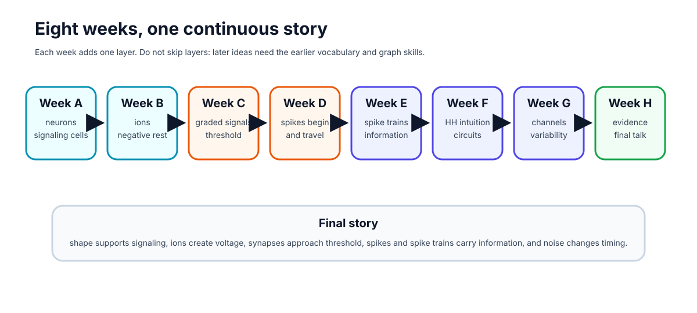
Week-By-Week Syllabus
This syllabus mirrors the biological and quantitative dependencies in the minibook while making the neuro-information layer explicit. The student should not skip ahead: each week supplies vocabulary, graph-reading habits, and small calculations needed later.
| Week | Current minibook anchor | Revised textbook-style chapter | Prerequisites | Learning objectives | Basic calculations | Estimated total time |
|---|---|---|---|---|---|---|
| Week A | Neuron shape, parts, voltage language | Neurons as signaling cells | Basic cell biology, atoms/charge | Identify dendrites, soma, axon, terminals; explain input/decision/output; distinguish charge, potential, voltage | mV changes such as -70 to -55 mV | 4.0-4.5 h |
| Week B | Ions, diffusion, resting potential | Ions, gradients, and why rest is negative | Week A | Explain Na+, K+, Cl-, Ca2+ distributions; distinguish diffusion vs electrical force; explain selective permeability | Sign-only Nernst reasoning; simple concentration-ratio thinking | 4.5-5.0 h |
| Week C | Synapses and threshold | Graded signals and threshold | Weeks A-B | Explain EPSPs, IPSPs, temporal/spatial summation, trigger zone | Add simple EPSP values to estimate threshold approach | 4.0-4.5 h |
| Week D | Action potentials and propagation | How spikes begin and travel | Weeks A-C | Narrate depolarization, repolarization, refractory period, myelin, nodes | Read phase durations and threshold crossings from graphs | 4.5-5.0 h |
| Week E | Spike trains are present but compressed | Spike trains and neural information | Weeks A-D | Distinguish single-spike amplitude from firing rate/timing; interpret rasters and rate plots | Spike rate, ISI, mean ISI | 4.0-4.5 h |
| Week F | HH week | Circuits and Hodgkin-Huxley intuition | Weeks A-E | Read membrane-as-capacitor analogy; interpret conductance and reversal potential; explain clamp experiments | Use I = g(V_m - E) qualitatively and numerically in simple cases | 4.5-5.0 h |
| Week G | Random channels and variability | From single channels to timing variability | Weeks A-F | Explain stochastic gating, channel noise, finite-size fluctuations, CV of ISI, trial-to-trial jitter | ISI SD and CV; open-fraction fluctuations from repeated trials | 4.5-5.0 h |
| Week H | Mini-project and final talk | Evidence, explanation, and communication | All earlier weeks | Form a hypothesis, run a simple model, summarize evidence, state limitations, communicate clearly | Compare conditions, summarize means/CVs | 4.0-5.0 h |
OpenStax-style dependency order supports the early biology sequence: graded potentials and synapses should come before action potentials, and action potentials should come before spike trains. Later weeks use authentic modeling language from Allen Cell Types, NEURON, and NetPyNE-style ecosystems without requiring the student to master those tools yet.
How To Study
Each chapter follows the same lesson rhythm. The order matters: look first, explain next, read one graph or diagram carefully, then calculate.
| Lesson component | Typical time | Purpose |
|---|---|---|
| Visual opener | 15-20 min | Start from an image, trace, simulation, or animation still. |
| Core concept lesson | 35-45 min | Define vocabulary and tell the causal story in plain language. |
| Graph/diagram-reading block | 20-30 min | Read one key visual before doing formula work. |
| Worked example | 15-25 min | Solve one concrete example step by step. |
| Basic calculation | 15-25 min | Do one small numeric task, never more than two new steps. |
| Mini-lab or code | 20-40 min | Use a simulation, spreadsheet, notebook, drawing, or physical analogy. |
| Retrieval quiz and reflection | 10-15 min | Check memory, explain the idea aloud, and decide what needs review. |
Every week also names prerequisites, required vocabulary, target misconceptions, homework, answer keys, and assessment checkpoints. The student should use these sections actively: cover the answers, try the questions, then compare.
Teaching Infrastructure
The book is designed to feel like a short textbook, not a packet of notes. Each chapter now uses the same support system.
| Infrastructure | How the student uses it | How the mentor uses it |
|---|---|---|
| Concept Figure A | Study the clean diagram and explain the mechanism in words. | Ask what the diagram intentionally leaves out. |
| Reality Figure B | Compare the simplified idea with a real image, trace, dataset, or model output. | Ask what kind of evidence the figure is: real data, cartoon, simulation, or storyboard. |
| What this figure is / is not | Prevents mixing up mechanism, evidence, and idealization. | Use this box whenever the student over-interprets a cartoon. |
| Worked examples | Read the solution, cover it, then solve the same style of problem again. | Gradually remove hints by the middle of the course. |
| Graph-reading blocks | Read axes, units, and visual patterns before doing formulas. | Ask for a graph interpretation before asking for a mechanism name. |
| Mini-labs and code | Use simple drawings, coins, spreadsheets, or notebooks to make the idea active. | Keep the code tiny and ask for a sentence of interpretation. |
| Low-stakes checks | Treat quizzes as feedback, not grades. | Look for misconceptions, especially sign errors and graph-reading errors. |
| Cumulative glossary | Use glossary words as anchors across weeks. | Ask the student to define a new term and use it in a causal sentence. |
Pedagogical Scaffolding Map
Every chapter now makes the learning target, likely misconception, formative check, support path, and extension path explicit. The student should treat these as study controls: know the goal, check understanding, repair one misconception, then move forward.
| Week | Learning outcome | Misconception to address directly | Formative check | Support for struggling student | Extension for advanced student |
|---|---|---|---|---|---|
| A | Draw and explain a neuron as an input/decision/output system. | "Every neuron looks like the same cartoon." | Label an unlabeled neuron image. | Use color-coded part cards and tracing overlays. | Compare Purkinje vs pyramidal morphology. |
| B | Explain why resting voltage is usually negative inside. | "The Na+/K+ pump directly causes all of resting potential." | One-paragraph explanation of K+ leak plus gradients. | Use one-ion-at-a-time reasoning before mixed-ion reasoning. | Compare Nernst vs Goldman qualitatively. |
| C | Explain EPSP/IPSP and summation. | "Any single input automatically causes a spike." | Predict whether a short input sequence reaches threshold. | Use tactile tokens for summation. | Add inhibitory inputs and discuss location effects. |
| D | Narrate action-potential phases and propagation. | "A stronger stimulus makes a taller spike." | Annotate a blank action-potential graph. | Provide phase cards with matching channel behavior. | Compare unmyelinated vs myelinated conduction. |
| E | Interpret spike rasters and ISIs. | "Information is only in spike height." | Convert raster to firing-rate description. | Start with hand-counting spikes before the rate formula. | Discuss timing codes and population coding qualitatively. |
| F | Read HH-like current statements in words. | "Voltage and current are the same thing." | Translate I = g(V_m - E) into plain English. | Use water-flow/circuit analogy and unit labels repeatedly. | Add RC time-constant intuition or simple clamp traces. |
| G | Explain why finite random channel populations can jitter spike timing. | "Randomness means there is no mechanism." | Compute ISI mean and CV from a short list. | Use coin-flip analogies and repeated-trial visuals. | Compare deterministic vs stochastic simulations. |
| H | Make and defend a claim with data. | "A graph alone is a conclusion." | CER paragraph: claim, evidence, reasoning. | Give sentence frames and interpretation prompts. | Add limitation analysis and next-step experimental design. |
Feedback Routine
At the end of each section, the student should answer the local quick check before continuing. If she misses it, she should revise the sentence, redraw the key part of the figure, or redo the calculation immediately. The goal is not general praise; the goal is actionable feedback that tells her what to repair next.
Assessment Architecture
Assessment has three layers, and only the final layer is summative. The point is to make feedback useful while the student can still act on it.
| Layer | When | What it includes | How to use it |
|---|---|---|---|
| Daily formative checks | Each study day | One prediction question, one graph-reading question, one plain-language explanation, and one quantitative item. | Low-stakes. Discuss immediately and revise one answer before moving on. |
| Weekly chapter checks | End of each chapter | Five to eight questions plus one short oral explanation. | Check readiness for the next week; aim for about 80% on core items plus a coherent oral explanation. |
| Summative mini-project | Week H | One evidence-based claim with a figure, timing metric, limitation, and short presentation. | Assess scientific explanation, not coding sophistication. |
The final project should be graded on conceptual accuracy, correct graph labeling, correct use of terms, at least one timing calculation, one limitation, and the ability to distinguish model output from biological evidence.
Student Core And Mentor Background Reading
Keep the student's assigned reading narrow. The core learning path is this minibook, selected OpenStax sections, selected Neuroscience Online pages, one or two HHMI/PhET interactives, and the local figures/notebooks. The mentor background path is different: those sources should improve the explanations and examples, but they do not need to be assigned in full to a high-school learner.
| Week | Student core reading and activity | Mentor background only |
|---|---|---|
| A | This minibook Chapter 1; HHMI BioInteractive neuron background; OpenStax Biology 2e 35.2 only for the broad neuron-communication picture. | Allen Cell Types morphology views; NeuroMorpho examples if a real morphology comparison would help. |
| B | This minibook Chapter 2; OpenStax Biology 2e 35.2 membrane-potential paragraphs; PhET Membrane Channels; optional Neuroscience Online Chapter 1 only through resting-potential intuition. | Neuroscience Online Membrane Potential Laboratory; NCBI Bookshelf resting-potential background; Goldman-Hodgkin-Katz context only if the student asks why the Nernst equation is not the whole story. |
| C | This minibook Chapter 3; OpenStax Anatomy and Physiology 2e 12.5 on communication between neurons; OpenStax Biology 2e 35.2 on synapses, EPSPs, and IPSPs. | Neuroscience Online Chapter 4 and Chapter 6 for mentor examples of chemical synapses and central synaptic transmission. |
| D | This minibook Chapter 4; OpenStax Anatomy and Physiology 2e 12.4 action-potential figure and text; Neuroscience Online Chapter 2 only for Na+ and K+ channel timing. | Hodgkin and Huxley's 1952 conductance model paper; ModelDB squid axon HH example. |
| E | This minibook Chapter 5; local spike raster, rate, ISI, and CV exercises; no extra paper reading required. | Allen electrophysiology traces for authentic firing patterns; spike-train interpretation examples chosen by the mentor. |
| F | This minibook Chapter 6; local HH circuit and HH-intuition notebook. | Allen GLIF model documentation and Teeter et al. 2018; Allen biophysical model documentation; NEURON and NetPyNE pages as tool context. |
| G | This minibook Chapter 7; patch-clamp cartoon, single-channel trace, and coin-flip channel-noise activity. | Hamill et al. 1981 patch-clamp methods paper; ModelDB channel-noise example; selected patch-clamp history background. |
| H | This minibook Chapter 8; capstone notebook, rubric, and final talk template. | Allen Cell Types, DANDI, NWB, and ModelDB as authentic data/model pathways for mentor-guided extensions only. |
The rule is simple: the student reads only what helps her complete the week's chapter tasks. The mentor may read deeper sources to answer questions accurately, choose better examples, and avoid oversimplifying the biology.
Key student-facing anchors include OpenStax Biology 2e 35.2, OpenStax Anatomy and Physiology 2e 12.4, OpenStax Anatomy and Physiology 2e 12.5, Neuroscience Online Section 1, HHMI BioInteractive, and PhET Membrane Channels.
Key mentor-facing anchors include Hodgkin and Huxley 1952, Hamill et al. 1981, Allen GLIF models, AllenSDK GLIF documentation, AllenSDK biophysical model documentation, NEURON, NetPyNE, ModelDB HH squid axon example, ModelDB channel-noise example, DANDI, and Neurodata Without Borders.
Curated Data Assets
The student should use curated examples, not open-ended data hunting.
| Asset | File or route | Use |
|---|---|---|
| Synthetic spike-time CSV | neuro_book/datasets/synthetic_spike_times.csv |
Practice raster, ISI, mean ISI, rate, and CV. |
| Toy SWC morphology file | neuro_book/datasets/toy_pyramidal_morphology.swc |
See how morphology can be stored as points and branches. |
| Allen example route | neuro_book/datasets/allen_cell_types_example.md |
Mentor-guided path to a real morphology/ephys example. |
| Action-potential storyboard | neuro_book/figures/generated/anim_01_action_potential_storyboard.md |
Build or rehearse an animation without producing video. |
The target final presentation is a short scientific explanation for other high-school students: how neuron shape, ions, membranes, channels, and random channel behavior can affect spike timing.
Math tools for membrane voltage
This front appendix gives the minimum math needed before calculus. The student should read it before Chapter 2 and return to it whenever a symbol or graph feels slippery.
1. Millivolts, milliseconds, and hertz
Neurons use small voltages and fast times, so the units look unfamiliar at first.
| Unit | Meaning | Conversion | Neuroscience use |
|---|---|---|---|
| mV | millivolt | 1 mV = 0.001 V | membrane voltage, such as -70 mV |
| ms | millisecond | 1 ms = 0.001 s | spike timing and action-potential duration |
| Hz | hertz | 1 Hz = 1 event/s | firing rate, or spikes per second |
Examples:
-0.070 V = -70 mV
120 ms = 0.120 s
10 spikes / 2 s = 5 Hz
2. Scientific notation
Scientific notation is a compact way to write very large or very small numbers.
1000 = 1 x 10^3
0.001 = 1 x 10^-3
0.000001 = 1 x 10^-6
For this course, the most important powers are:
milli = one thousandth = 10^-3
micro = one millionth = 10^-6
3. Positive versus negative voltage change
Membrane voltage is usually written as inside relative to outside. If V_m = -70 mV, the inside is 70 mV lower than outside.
- Moving from -70 mV to -55 mV is a positive change of +15 mV. The voltage became less negative.
- Moving from -70 mV to -80 mV is a negative change of -10 mV. The voltage became more negative.
- Moving from -70 mV to +25 mV is a positive change of +95 mV because the path crosses zero.
change = final voltage - starting voltage
4. Reading a voltage-time graph
A voltage-time graph usually has time on the x-axis and V_m on the y-axis.
Ask six questions:
- What is on the x-axis?
- What is on the y-axis?
- What units are used?
- Where is resting voltage?
- Where does the biggest change happen?
- What does the graph not prove by itself?
For an action potential, mark rest, threshold, peak, falling phase, hyperpolarization, and return to rest.
5. Common logarithms for the Nernst equation
The Nernst equation uses log10(outside / inside).
| Ratio | Log sign | Meaning |
|---|---|---|
| outside / inside > 1 | positive | outside concentration is larger |
| outside / inside = 1 | zero | concentrations are equal |
| outside / inside < 1 | negative | inside concentration is larger |
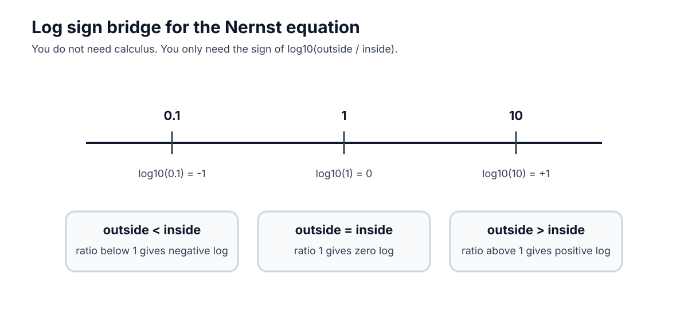
The student does not need to derive the equation. She only needs the sign logic:
E_ion in mV = (61 / z) log10(outside concentration / inside concentration)
If K+ is higher inside than outside, outside/inside is less than 1. The log is negative, so E_K is negative. If Na+ is higher outside than inside, outside/inside is greater than 1. The log is positive, so E_Na is positive.
6. No-calculus promise
This book uses graph slopes and rate language, but it does not require derivatives. When a symbol such as dV/dt appears in a source note, read it only as "how fast voltage changes." Formal calculus can wait until the physical story is stable.
Week A / Chapter 1. Neurons as Signaling Cells
Opening Question
How does a neuron's shape help it receive, decide, and send information?
Learning Goals
- Identify dendrites, soma, axon initial segment, axon, myelin, nodes, and terminals.
- Explain input, trigger, conducting, and output zones in plain language.
- Distinguish charge, potential, voltage, and a change in mV at a beginner level.
- Compare real neuron morphologies without expecting every neuron to match one cartoon.
- Connect neuron shape to the later ions -> voltage -> spikes -> timing story.
Week Snapshot
| Field | Week A plan |
|---|---|
| Current minibook anchor | Neuron shape, parts, voltage language |
| Revised textbook-style chapter | Neurons as signaling cells |
| Prerequisites | Basic cell biology, atoms/charge |
| Learning objectives | Identify dendrites, soma, axon, terminals; explain input/decision/output; distinguish charge, potential, voltage |
| Basic calculations | mV changes such as -70 to -55 mV |
| Estimated total time | 4.0-4.5 h |
Weekly Lesson Spine
| Lesson component | Typical time | This chapter's job |
|---|---|---|
| Visual opener | 15-20 min | Compare real neuron morphologies before memorizing a cartoon. |
| Core concept lesson | 35-45 min | Learn input, trigger, conducting, and output zones. |
| Graph/diagram-reading block | 20-30 min | Read morphology figures as evidence about signal direction. |
| Worked example | 15-25 min | Label a neuron from visual clues. |
| Basic calculation | 15-25 min | Practice mV changes such as -70 mV to -55 mV. |
| Mini-lab or code | 20-40 min | Draw and simplify a real neuron image. |
| Retrieval quiz and reflection | 10-15 min | Explain the neuron map aloud without looking. |
Independent Study Scaffold
| Learning outcome | Misconception to address directly | Formative check | Support if stuck | Extension if ready |
|---|---|---|---|---|
| Draw and explain a neuron as an input/decision/output system. | Every neuron looks like the same cartoon. | Label an unlabeled neuron image and explain signal direction. | Use color-coded part cards and tracing overlays before drawing from memory. | Compare Purkinje and pyramidal morphology cautiously. |
How to use this scaffold: Read the outcome before starting the chapter. After each section, answer the quick check before continuing. If the answer is shaky, use the support prompt immediately; if the answer is solid, try the extension prompt.
Prerequisites and Recap
Prerequisites: ordinary cell vocabulary: cell membrane, cytoplasm, protein, and nucleus. Recap: cells are living systems with boundaries and chemical energy. This chapter adds the idea that one cell can be shaped for communication.
Required Vocabulary
Use this table for the chapter, and use the cumulative Glossary when a term returns in a later week.
| Term | Student-facing definition |
|---|---|
| Dendrite | Branched input structure that receives many signals. |
| Soma | Cell body that supports the neuron and helps combine inputs. |
| Axon initial segment | Common trigger region where action potentials begin. |
| Axon | Long output process that carries spikes away from the cell body. |
| Terminal | Axon ending that communicates with another cell. |
| Myelin | Insulating wrap that speeds signaling along many axons. |
| Node of Ranvier | Gap in myelin where spikes are regenerated. |
Misconception Box
Use this misconception box actively: When one of these ideas appears, do not just mark it wrong. Replace it with the correction in your own words and give one piece of evidence from a figure, graph, or calculation.
- "All neurons look like the same textbook cartoon." Real neurons vary a lot; the cartoon is a map, not a portrait.
- "A neuron is basically a copper wire." A neuron is a living cell that maintains gradients, opens channels, and regenerates signals.
- "Dendrites and axons are interchangeable branches." Their usual jobs differ: dendrites collect inputs; axons carry output.
- "Voltage is the same thing as charge." Charge belongs to particles; voltage is a difference in electrical potential.
- "A stronger message means a taller spike." Later chapters show that stronger messages often mean more spikes or different timing.
Visual Opener
Start with real neurons, then simplify. A Purkinje cell has a huge dendritic tree; a pyramidal neuron has a tall apical dendrite; a sensory neuron may place the soma off the main path. The simplified map is not a portrait. It is a reading tool: find input, trigger, conduction, output.
Reality Figure B: Real Neuron Gallery
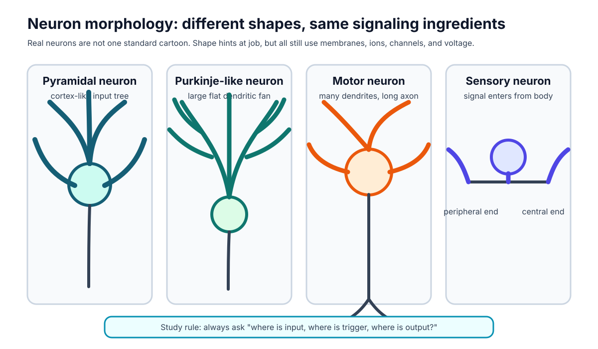
Different neuron shapes, same signaling job. Real neurons differ greatly in shape, but all still have receiving regions, a trigger zone, and an output path.
What this figure is: A morphology gallery that helps you compare cell-body position and branching patterns.
What this figure is not: It is not proof that shape alone tells the full function of the cell.
Source note: Local vector teaching figure based on OpenStax morphology framing and Allen/real-cell morphology resources.
Concept Figure A: Simplified Signaling Map
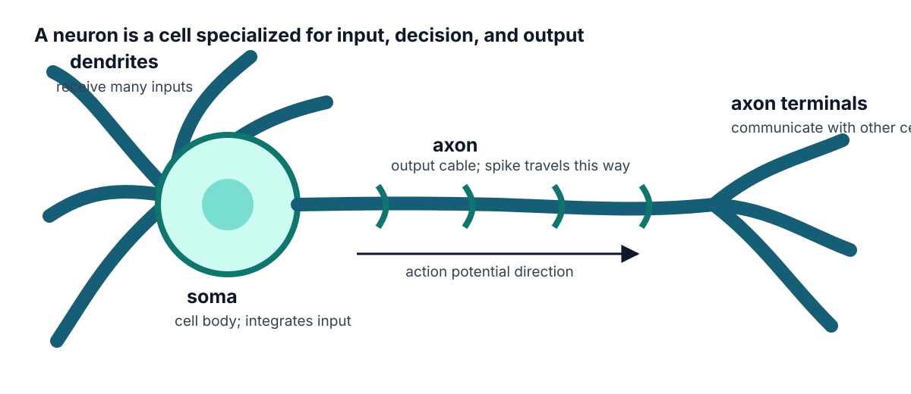
A simplified signaling map of a neuron. The cartoon removes detail so the reader can track where input arrives, where spikes begin, and where output goes.
What this figure is: A clean map for input, trigger, conducting, and output zones.
What this figure is not: It is not a literal portrait of every neuron.
Source note: Original generated course cartoon used as the minibook backbone.

Real neuron heterogeneity shows that neurons do not all share one cartoon shape.

A Purkinje cell drawing emphasizes how large a dendritic tree can be.
Quick Check: Visual opener
Question: Why is the simplified neuron map useful after looking at real neurons?
Answer: It helps track input, trigger, conducting, and output zones while remembering that real neurons vary.
Core Concept Lesson
A neuron is a living cell with a communication job. Dendrites receive local inputs. The soma and nearby axon initial segment combine those inputs. If the trigger region reaches threshold, the axon carries an action potential to terminals. Shape matters because signals have to move through space, but shape is only the first layer. Later chapters explain how ions and channels create the electrical signals that travel through this shape.
Quick Check: Core concept
Question: What job makes a neuron different from many other cells?
Answer: Communication: receiving signals, deciding whether to fire, and sending output.
Graph/Diagram-Reading Block
Use the morphology comparison page like a data figure. First find the soma. Second mark all branches that look like input collectors. Third find the longest output path if one is visible. Fourth ask whether the drawing shows myelin, terminals, or only the cell body and dendrites. The goal is not to name every branch; the goal is to infer the communication layout from shape.
Quick Check: Graph/diagram reading
Question: When reading a morphology figure, what should you locate first?
Answer: The soma, then likely receiving branches and output path.
Worked Example Box A
Study move: Cover the solution first, try the problem, then compare your reasoning with the worked solution.
Problem: A drawing has a round soma, many short branches on one side, and one long thin branch leaving the soma.
Solution: The short branches are likely dendrites, the round region is the soma, and the long thin branch is likely the axon. The signal map is input on branches, decision near soma/axon start, output along axon.
Quick Check A With Answer
Question: What are the four beginner zones of a neuron?
Answer: Input, trigger, conducting, and output zones.
Basic Calculation
Task: A membrane voltage changes from -70 mV to -55 mV. Did V_m become more negative or less negative, and by how much?
Answer: V_m became less negative by 15 mV. This is a depolarizing change because -55 mV is closer to zero than -70 mV.
Worked Example Box B
Study move: Cover the solution first, try the problem, then compare your reasoning with the worked solution.
Problem: A voltage changes from -70 mV to -80 mV. What happened and by how much?
Solution: V_m became more negative by 10 mV. This is a hyperpolarizing change. The sign of the final voltage is negative, but the change is also negative because -80 - (-70) = -10 mV.
Quick Check B With Answer
Question: Why begin with real neuron images?
Answer: They show that neurons are real cells with varied shapes, so the cartoon should be treated as a map rather than a perfect portrait.
Mini-Lab or Code
Choose one real neuron image in this chapter. On paper, make two drawings: a careful observational sketch and a simplified signaling map. Use arrows for input, trigger, conducting, and output zones. Then write one sentence beginning, "The simplified map leaves out..." This trains the student to simplify without pretending the simplification is the whole truth.
Quick Check: Mini-lab
Question: What should the simplified map leave out?
Answer: Fine morphology details that are not needed for the input-to-output story.
Interactive Exercise
Use an Allen Cell Types morphology view or the local real-neuron gallery. Spend five minutes only observing, then answer: Where is the soma? Where are likely receiving branches? What feature would you need before making a stronger functional claim?
Quick Check: Interactive exercise
Question: What evidence would you need before claiming a morphology has a specific function?
Answer: More context such as cell type, location, inputs, outputs, or electrophysiology.
Retrieval Quiz and Reflection
- Without looking, list the four beginner signaling zones.
- Point to the axon initial segment on the simplified map and say why it matters.
- In one sentence, explain why real neuron images should come before cartoons.
Answers: The zones are input, trigger, conducting, and output. The axon initial segment is the common trigger region for action potentials. Real images show variation, so cartoons are tools for reasoning rather than perfect copies.
Assessment checkpoint: The student is ready to move on when she can label a new neuron image and explain signal direction without reading from the page.
Chapter Summary
Chapter 1 answers the opening question by connecting the visual story to a mechanism the student can explain without calculus. The key move is: A neuron is a living cell with a communication job.
Homework
Questions
- Draw one real-looking neuron and one simplified signaling map. Label input, trigger, conducting, and output zones.
- Write four sentences explaining why a neuron is not simply a wire.
- Graph-reading: choose the real-neuron gallery and identify one feature that suggests a receiving region.
- Quantitative: V_m changes from -70 mV to -55 mV. State the direction and size of the change.
- Misconception check: explain why "all neurons look like the cartoon" is wrong.
- Extension: compare a Purkinje-like neuron and a sensory-like neuron. Make one cautious claim about shape and signaling.
Answer Key
- The drawing should include dendrites, soma, axon initial segment, axon, and terminals, with arrows showing usual information flow.
- A correct answer says it is a living cell, uses ion channels and membranes, maintains chemical gradients, and actively regenerates spikes.
- A good answer points to branching dendrites or a large dendritic tree and says this shape can collect many inputs.
- It depolarizes by 15 mV because -55 mV is less negative than -70 mV.
- Real neurons vary in soma position, dendritic branching, and axon shape; the cartoon is a reasoning map.
- A cautious claim links larger branching to more possible input collection without claiming shape alone proves function.
Stretch Box
Compare a Purkinje neuron and pyramidal neuron. Make one claim about how each shape might change input collection, but avoid claiming you know the full function from shape alone.
Mentor Note
Ask the student to point to input, trigger, conducting, and output zones on every neuron image. This one repeated question prevents memorizing labels without understanding signal direction.
Glossary Additions
- Dendrite
- Soma
- Axon initial segment
- Axon
- Myelin
- Node of Ranvier
Source Notes
| Figure | Asset | Caption | Alt text | Source notes |
|---|---|---|---|---|
| 1.1 | morphology_comparison_page.svg |
Different neuron shapes solve different signaling problems. | Comparison page with multipolar, sensory/unipolar-like, and highly branched neuron morphologies. | Generated local morphology comparison, with source route documented as OpenStax morphology figures plus optional Allen Cell Types or NeuroMorpho screenshots. |
| 1.2 | openstax_neuron_heterogeneity.webp |
Real neuron heterogeneity shows that neurons do not all share one cartoon shape. | Several real neuron drawings with different morphologies. | OpenStax open educational resource. |
| 1.3 | purkinje_cajal.gif |
A Purkinje cell drawing emphasizes how large a dendritic tree can be. | Cajal drawing of a Purkinje neuron. | Wikimedia Commons, public domain. |
| 1.4 | neuron_map.svg |
Simplified neuron map for input, trigger, conduction, and output. | Diagram of dendrites, soma, axon, and terminals with spike direction. | Original generated course figure. |
Week B / Chapter 2. Ions, Gradients, and Why Rest Is Negative
Opening Question
How can salty water and a thin membrane make a measurable voltage?
Learning Goals
- Explain why potassium is central to resting membrane potential.
- Compute and interpret a simple Nernst equilibrium potential.
- Distinguish concentration gradient from electrical force.
Week Snapshot
| Field | Week B plan |
|---|---|
| Current minibook anchor | Ions, diffusion, resting potential |
| Revised textbook-style chapter | Ions, gradients, and why rest is negative |
| Prerequisites | Week A |
| Learning objectives | Explain Na+, K+, Cl-, Ca2+ distributions; distinguish diffusion vs electrical force; explain selective permeability |
| Basic calculations | Sign-only Nernst reasoning; simple concentration-ratio thinking |
| Estimated total time | 4.5-5.0 h |
Weekly Lesson Spine
| Lesson component | Typical time | This chapter's job |
|---|---|---|
| Visual opener | 15-20 min | Start from ion concentration bars before discussing voltage. |
| Core concept lesson | 35-45 min | Build the chain: ion -> gradient -> selective permeability -> V_m. |
| Graph/diagram-reading block | 20-30 min | Read the Nernst sign plot before calculator work. |
| Worked example | 15-25 min | Interpret a sign-and-units voltage change. |
| Basic calculation | 15-25 min | Compute one simple Nernst estimate with log10. |
| Mini-lab or code | 20-40 min | Use the Nernst explorer or PhET-style membrane channel simulation. |
| Retrieval quiz and reflection | 10-15 min | Explain why K+ is central to resting voltage. |
Independent Study Scaffold
| Learning outcome | Misconception to address directly | Formative check | Support if stuck | Extension if ready |
|---|---|---|---|---|
| Explain why resting voltage is usually negative inside. | The Na+/K+ pump directly causes all of resting potential. | Write one paragraph explaining K+ leak plus ion gradients. | Reason one ion at a time before mixing ions. | Compare Nernst and Goldman qualitatively. |
How to use this scaffold: Read the outcome before starting the chapter. After each section, answer the quick check before continuing. If the answer is shaky, use the support prompt immediately; if the answer is solid, try the extension prompt.
Prerequisites and Recap
Prerequisites: atoms can have charge, concentration means amount per volume, and Chapter 1 introduced the neuron as a living cell with a membrane. Recap: the bridge from the previous chapter is from neuron shape to membrane function. This chapter explains how charged ions and selective membrane permeability give that shape an electrical state.
Required Vocabulary
Use this table for the chapter, and use the cumulative Glossary when a term returns in a later week.
| Term | Student-facing definition |
|---|---|
| Ion | Charged atom or molecule. |
| Concentration gradient | A difference in concentration from one place to another, such as high K+ inside and low K+ outside. |
| Selective permeability | A membrane property where some ions can cross more easily than others because certain channels are open. |
| Resting membrane potential | The usual membrane voltage of a neuron when it is not firing; many neurons sit near -70 mV. |
| Equilibrium potential | The voltage where one ion's concentration gradient and electrical force balance, so that ion has no net tendency to move. |
| Cation | Positive ion, such as Na+ or K+. |
| Anion | Negative ion, such as Cl-. |
| Electrical force | The push or pull on a charged particle caused by voltage. |
| Driving force | How far V_m is from an ion's equilibrium potential. |
Misconception Box
Use this misconception box actively: When one of these ideas appears, do not just mark it wrong. Replace it with the correction in your own words and give one piece of evidence from a figure, graph, or calculation.
- "Voltage is a substance stored inside the neuron." Voltage is a difference in electrical potential between inside and outside.
- "A negative membrane potential means the whole cell is full of negative charge." The whole cell is nearly neutral; the important imbalance is tiny and near the membrane.
- "The Na+/K+ pump directly makes every millisecond of resting voltage." The pump maintains gradients over time; leak channels and gradients explain the immediate V_m.
- "The Nernst equation gives the actual resting V_m for the whole neuron." Nernst gives one ion's balance point; real V_m depends on several permeabilities.
Visual Opener
Start with ions before voltage. First compare the ion concentration bars: Na+ is mostly outside, K+ is mostly inside, Cl- is often higher outside, and Ca2+ is kept extremely low inside. Then look at the Nernst sign plot: when outside/inside is less than 1 for a positive ion like K+, the equilibrium potential is negative. Finally, use the resting membrane cartoon to see why selective K+ permeability can make the inside of the neuron negative relative to outside.
Reality Figure B: Ion Gradient Barplot
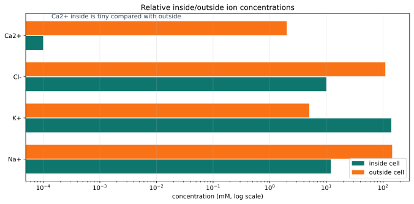
Different ions are unevenly distributed across the membrane. The pattern, not the exact number, is the key beginner lesson.
What this figure is: A quantitative comparison of typical inside/outside ion concentrations.
What this figure is not: It is not a claim that every neuron has exactly these numbers at every moment.
Source note: Generated locally from standard illustrative ion distributions used in introductory membrane-potential lessons.
Concept Figure A: Electrochemical Push
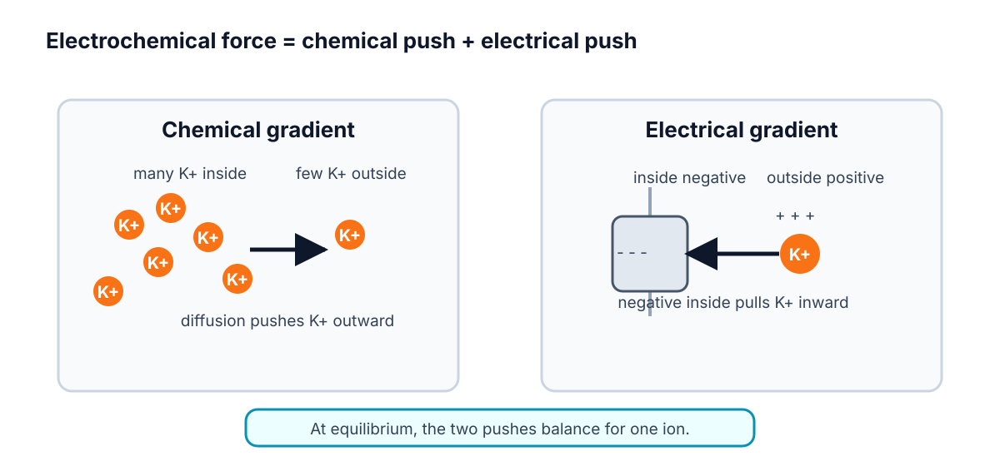
Electrochemical force combines two pushes. Diffusion and electrical attraction can oppose each other, and the balance point defines a reversal potential.
What this figure is: A two-force diagram that separates concentration push from electrical pull.
What this figure is not: It is not a full molecular simulation of every ion near the membrane.
Source note: Generated locally from resting-potential and reversal-potential concepts.
Measurement Figure: Membrane Potential
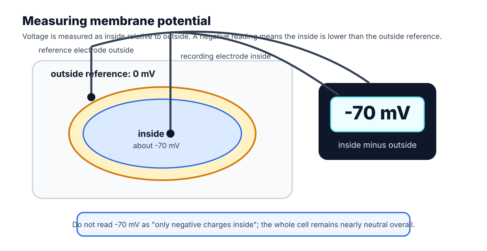
Membrane potential is a voltage difference. A neuron's inside is measured relative to the outside reference.
What this figure is: A measurement cartoon showing what -70 mV means operationally.
What this figure is not: It is not saying the whole inside of the cell has become strongly negative.
Source note: Generated locally from the standard membrane-potential measurement description used in introductory physiology.
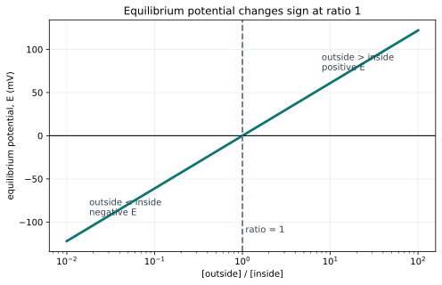
Equilibrium potential changes sign when the outside/inside ratio crosses one.
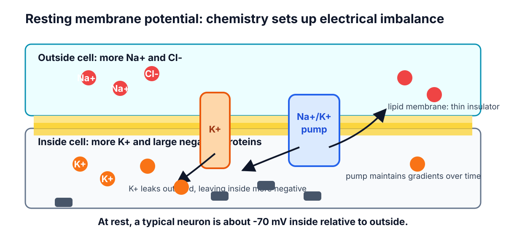
Resting membrane cartoon: selective K+ permeability lets K+ diffusion outward and electrical pull inward balance near a negative V_m.
Quick Check: Visual opener
Question: Which ion pattern is most important for explaining a negative resting V_m?
Answer: K+ is high inside, and resting membranes often have K+ leak permeability.
Core Concept Lesson
Resting voltage comes from ion gradients plus selective permeability. The concentration gradient for K+ points outward because K+ is much more concentrated inside the neuron. The electrical force on K+ points inward once the inside becomes negative. The K+ equilibrium potential is the voltage where those two tendencies balance. Because resting membranes are often more permeable to K+ than to Na+, V_m at rest sits closer to E_K than to E_Na, though not exactly at E_K because other ions and channels also matter. The Na+/K+ pump maintains the Na+ and K+ gradients over time, but the immediate resting voltage is mainly explained by the existing gradients plus which leak channels are open. The next chapter uses this resting voltage as the starting point for synaptic inputs and graded potentials.
Quick Check: Core concept
Question: What two ingredients create resting voltage?
Answer: Ion gradients plus selective permeability.
Graph/Diagram-Reading Block
Read the Nernst sign plot in four passes. First find the x-axis: outside concentration divided by inside concentration. Second find the dashed ratio of 1, where outside and inside are equal. Third notice that the curve crosses 0 mV there. Fourth read the two sides: for a positive ion, ratios less than 1 give negative equilibrium potentials, while ratios greater than 1 give positive equilibrium potentials. This graph explains the sign before the calculator gives a number.
Quick Check: Graph/diagram reading
Question: For a positive ion, what sign does E_ion have when outside/inside is less than 1?
Answer: Negative.
Worked Example Box A
Study move: Cover the solution first, try the problem, then compare your reasoning with the worked solution.
Problem: For a positive ion, the outside concentration is lower than the inside concentration. Before using a calculator, predict whether the Nernst equilibrium potential is positive, negative, or zero.
Solution: The outside/inside ratio is less than 1. For a positive ion, log10(outside/inside) is negative, so the equilibrium potential is negative. K+ is the main example: high K+ inside and lower K+ outside gives a negative E_K.
Quick Check A With Answer
Question: Which is a concentration-gradient statement: 'K+ is high inside' or 'inside is negative'?
Answer: 'K+ is high inside' is the concentration-gradient statement. 'Inside is negative' is an electrical statement.
Basic Calculation
Task: For a positive ion, outside = 10 mM and inside = 100 mM. Decide the sign of E_ion before calculating its value.
Answer: outside/inside = 10/100 = 0.1. log10(0.1) = -1, so E_ion is negative for z = +1. The biology sentence is: this ion would be balanced when the inside is negative relative to outside.
Worked Example Box B
Study move: Cover the solution first, try the problem, then compare your reasoning with the worked solution.
Problem: Use E_ion = (61 / z) log10(outside/inside) at room-temperature scale. For K+, z = +1, outside = 5 mM, and inside = 140 mM. Estimate E_K and interpret its sign.
Solution: Compute outside/inside = 5/140 = 0.0357. On a calculator, log10(0.0357) is about -1.40. E_K = 61 x -1.40 = about -85 mV. The negative sign means K+ would be balanced when the inside is substantially negative compared with outside.
Quick Check B With Answer
Question: Why is potassium central to many resting membrane potentials?
Answer: K+ is high inside and many resting membranes have K+ leak permeability, so K+ strongly influences where V_m settles.
Mini-Lab or Code
Run notebooks/chapter02_ions_gradients_resting_voltage.ipynb or the shorter Nernst explorer. Change only the outside/inside ratio at first. For each trial, write three things: the ratio, the sign of E_ion, and a sentence explaining what the sign means. After that, try changing z from +1 to -1 and notice why chloride needs special care.
Quick Check: Mini-lab
Question: Why change only one ratio first in the Nernst explorer?
Answer: It lets the student see one cause-effect relation before combining variables.
Interactive Exercise
Use PhET Membrane Channels or the local Nernst explorer. Open and close only one kind of channel at a time and write the causal sentence: "When this channel opens, V_m is pulled toward..."
Quick Check: Interactive exercise
Question: Complete the sentence: when a channel opens, V_m is pulled toward...
Answer: That ion pathway's equilibrium or reversal potential.
Retrieval Quiz and Reflection
- Define ion, concentration gradient, and selective permeability.
- Explain why K+ tends to diffuse outward at rest.
- Explain why negative inside voltage pulls K+ inward.
- State why V_m is near E_K but not exactly equal to E_K.
Answers: An ion is charged; a concentration gradient is a concentration difference; selective permeability means some ions cross more easily than others. K+ diffuses outward because it is high inside. Negative inside voltage attracts positive K+. V_m is near E_K because K+ permeability is important, but other ions also contribute.
Assessment checkpoint: The student is ready to move on when she can do a sign prediction from the Nernst graph and attach one biological interpretation sentence.
Chapter Summary
Chapter 2 answers the opening question by connecting the visual story to a mechanism the student can explain without calculus. The key move is: Resting voltage comes from ion gradients plus selective permeability.
Homework
Questions
- Make an ion table for Na+, K+, Cl-, and Ca2+ with charge, usual high side, and beginner role.
- Write one sentence defining concentration gradient and one sentence defining electrical force.
- For a positive ion, outside/inside = 10. Is log10(outside/inside) positive, negative, or zero? What does that imply for E_ion?
- For K+, outside = 4 mM and inside = 120 mM. Use E_K = 61 log10(outside/inside). Round to the nearest mV.
- Explain why opening K+ leak channels can make the inside of the neuron negative.
- Bridge to Chapter 3: if a synapse opens channels after the neuron is resting near -70 mV, why can that synapse change V_m?
- Graph-reading: in the Nernst sign plot, what happens when outside/inside crosses 1?
- Extension: explain why Ca2+ can be a powerful signal even though its resting inside concentration is tiny.
Answer Key
- Na+ is +1 and high outside; K+ is +1 and high inside; Cl- is -1 and often higher outside; Ca2+ is +2 and extremely low inside. Na+ and K+ are central for voltage changes, Cl- often shapes inhibition, and Ca2+ is a powerful signaling ion.
- A concentration gradient is a difference in concentration across space. Electrical force is the push or pull on an ion caused by voltage and charge.
- It is positive because log10(10) = +1, so E_ion is positive for z = +1.
- 4/120 = 0.0333. log10(0.0333) is about -1.48. E_K is about 61 x -1.48 = -90 mV.
- K+ diffuses outward because it is high inside. Losing some positive charge leaves the inside relatively negative near the membrane, and that negative voltage then pulls K+ back inward.
- Opening channels changes selective permeability. The newly open channels let ions pull V_m toward their own equilibrium potentials, creating a graded voltage change.
- E_ion crosses 0 mV at outside/inside = 1 for z = +1. Ratios below 1 are negative; ratios above 1 are positive.
- Because Ca2+ is kept extremely low inside, even a small influx can create a large relative change and trigger signaling pathways.
Stretch Box
The Nernst equation gives one ion's balance point, but a real resting neuron has several permeable ions. Explain why V_m is usually near E_K but not exactly equal to E_K. Use the phrase 'selective permeability' and mention at least one other ion.
Mentor Note
Keep the sequence strict: ions first, concentration gradients second, electrical force third, voltage fourth. If the student says 'voltage pushes K+ out,' pause and ask what the concentration gradient and electrical force are doing separately.
Glossary Additions
- Ion
- Concentration gradient
- Selective permeability
- Resting membrane potential
- Equilibrium potential
- Electrical force
- Driving force
Source Notes
| Figure | Asset | Caption | Alt text | Source notes |
|---|---|---|---|---|
| 2.1 | ion_gradient_bars.svg |
Relative inside/outside ion concentrations create different electrochemical pulls. | Bar chart comparing clearly labeled illustrative inside and outside concentrations for Na+, K+, Cl-, and Ca2+. | Generated locally in Python using consistent illustrative values: Na+ 12/145 mM, K+ 140/5 mM, Cl- 10/110 mM, Ca2+ 0.0001/2 mM for inside/outside. |
| 2.2 | nernst_sign_plot.svg |
Equilibrium potential changes sign when the outside/inside ratio crosses one. | Semilog plot of equilibrium potential E versus outside divided by inside concentration ratio, crossing zero at ratio one. | Generated locally in Python from E = 61 log10([out]/[in]) for z = +1. |
| 2.3 | resting_membrane_cartoon.svg |
Resting membrane cartoon: selective K+ permeability lets K+ diffusion outward and electrical pull inward balance near a negative V_m. | Membrane diagram with K+ leak channels, high K+ inside, high Na+ outside, and negative inside voltage. | Original generated course figure; conceptually aligned with PhET Membrane Channels and NCBI Bookshelf ionic-basis explanations. |
Week C / Chapter 3. Graded Signals and Threshold
Opening Question
How do many small synaptic inputs combine before a neuron fires?
Learning Goals
- Define synapse, neurotransmitter, receptor, EPSP, IPSP, and graded potential.
- Distinguish graded potentials from action potentials.
- Explain temporal and spatial summation.
- Use simple arithmetic to reason about threshold without pretending the neuron is that simple.
Week Snapshot
| Field | Week C plan |
|---|---|
| Current minibook anchor | Synapses and threshold |
| Revised textbook-style chapter | Graded signals and threshold |
| Prerequisites | Weeks A-B |
| Learning objectives | Explain EPSPs, IPSPs, temporal/spatial summation, trigger zone |
| Basic calculations | Add simple EPSP values to estimate threshold approach |
| Estimated total time | 4.0-4.5 h |
Weekly Lesson Spine
| Lesson component | Typical time | This chapter's job |
|---|---|---|
| Visual opener | 15-20 min | Follow neurotransmitter from presynaptic terminal to postsynaptic channels. |
| Core concept lesson | 35-45 min | Define EPSPs, IPSPs, graded potentials, and summation. |
| Graph/diagram-reading block | 20-30 min | Read a summation diagram with baseline and threshold marked. |
| Worked example | 15-25 min | Add small excitatory and inhibitory voltage changes. |
| Basic calculation | 15-25 min | Compare final V_m to threshold. |
| Mini-lab or code | 20-40 min | Build a paper, spreadsheet, or notebook summation model. |
| Retrieval quiz and reflection | 10-15 min | Explain why graded potentials are not action potentials. |
Independent Study Scaffold
| Learning outcome | Misconception to address directly | Formative check | Support if stuck | Extension if ready |
|---|---|---|---|---|
| Explain EPSP, IPSP, and summation. | Any single input automatically causes a spike. | Predict whether a short input sequence reaches threshold. | Use tactile tokens or number-line cards for summation. | Add inhibitory inputs and discuss location effects. |
How to use this scaffold: Read the outcome before starting the chapter. After each section, answer the quick check before continuing. If the answer is shaky, use the support prompt immediately; if the answer is solid, try the extension prompt.
Prerequisites and Recap
Prerequisites: membrane potential can move up or down, and opening channels pulls voltage toward ion reversal potentials. Recap: Chapter 2 explained why channel opening changes voltage. This chapter applies that idea to synaptic input.
Required Vocabulary
Use this table for the chapter, and use the cumulative Glossary when a term returns in a later week.
| Term | Student-facing definition |
|---|---|
| Synapse | Communication point between neurons or between a neuron and another cell. |
| Neurotransmitter | Chemical messenger released by a presynaptic cell. |
| Receptor | Postsynaptic protein that responds to neurotransmitter. |
| EPSP | Excitatory postsynaptic potential, usually toward threshold. |
| IPSP | Inhibitory postsynaptic potential, usually away from threshold or stabilizing. |
| Graded potential | Local voltage change that can vary in size. |
| Temporal summation | Inputs close together in time add up. |
| Spatial summation | Inputs from different locations add up. |
Misconception Box
Use this misconception box actively: When one of these ideas appears, do not just mark it wrong. Replace it with the correction in your own words and give one piece of evidence from a figure, graph, or calculation.
- "Every voltage change is an action potential." Synaptic potentials are usually local, graded changes before threshold.
- "Inhibition means the neuron is turned off." Inhibition can hyperpolarize, stabilize, or reduce the effect of excitation.
- "EPSPs add perfectly forever." Real graded potentials fade over time and distance.
- "Threshold is reached at every synapse." Threshold is usually evaluated near the trigger zone, not at every dendritic input.
Visual Opener
A presynaptic terminal releases neurotransmitter into a narrow cleft. Receptors on the postsynaptic cell open channels. The local voltage nudges upward or downward. Many nudges can combine before the trigger zone reaches threshold.
Concept Figure A: Synapse And Postsynaptic Potentials
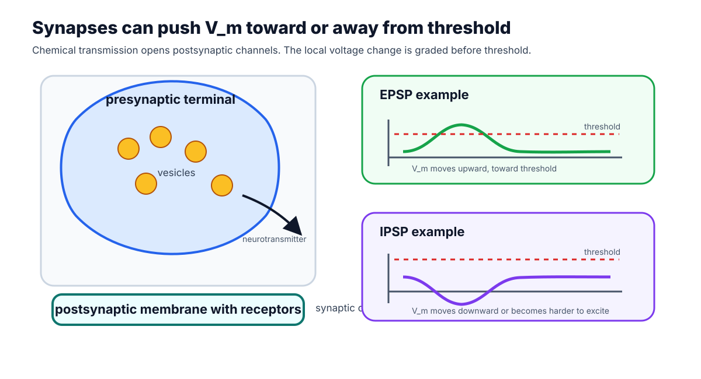
Synapses change postsynaptic voltage. The same neuron may be pushed toward or away from threshold depending on which channels open.
What this figure is: A conceptual synapse diagram paired with EPSP and IPSP voltage effects.
What this figure is not: It is not a full chemical-reaction map of neurotransmitter release and receptor kinetics.
Source note: Generated locally from OpenStax-style synapse and graded-potential concepts.
Reality Figure B: Summation Graph
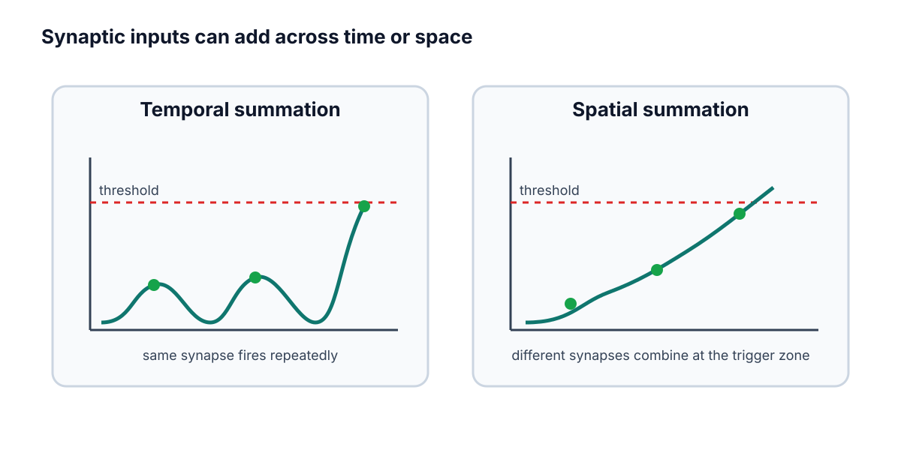
Small inputs can combine before a spike begins. Threshold depends on the total membrane effect of multiple graded inputs.
What this figure is: A trace-reading exercise for temporal and spatial summation.
What this figure is not: It is not a guarantee that real dendrites add inputs with simple arithmetic.
Source note: Generated locally as a simplified summation graph using threshold as the reading anchor.
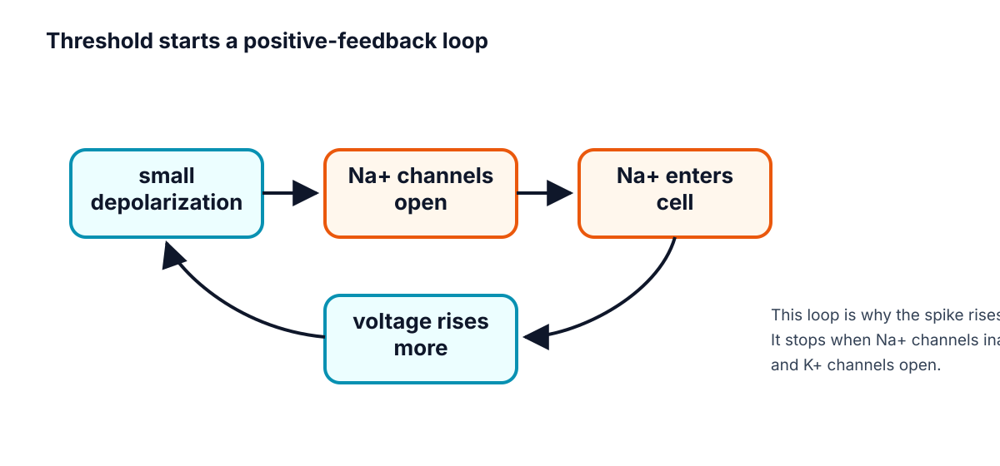
Threshold begins feedback, but synaptic inputs before threshold are graded.
Quick Check: Visual opener
Question: What changes on the postsynaptic cell after neurotransmitter binds?
Answer: Receptor-controlled channels open and create a graded voltage change.
Core Concept Lesson
Synaptic potentials are local and graded. An EPSP often depolarizes the postsynaptic membrane. An IPSP often hyperpolarizes the membrane or makes it harder to depolarize. Because these voltage changes can overlap, the trigger zone receives a running total of recent inputs. If the total reaches threshold, the next chapter's action-potential machinery takes over.
Quick Check: Core concept
Question: Why are synaptic potentials called graded?
Answer: Their size can vary; they are not all-or-none spikes.
Graph/Diagram-Reading Block
Read the summation diagram before doing arithmetic. First locate the resting baseline, usually near -70 mV in these examples. Second locate threshold, here -55 mV. Third mark each EPSP as an upward nudge and each IPSP as a downward or stabilizing nudge. Fourth ask whether the combined trace crosses threshold. The key graph skill is comparing a changing V_m trace against a fixed threshold line.
Quick Check: Graph/diagram reading
Question: What line should you compare the summed trace against?
Answer: The threshold line.
Worked Example Box A
Study move: Cover the solution first, try the problem, then compare your reasoning with the worked solution.
Problem: Start at -70 mV. Inputs are +4, +5, +6, and -3 mV. Threshold is -55 mV. Does the neuron reach threshold?
Solution: -70 + 4 + 5 + 6 - 3 = -58 mV. It does not reach -55 mV; it is 3 mV below threshold.
Quick Check A With Answer
Question: Are graded potentials all-or-none?
Answer: No. They vary in size and can fade.
Basic Calculation
Task: Start at -70 mV. Three EPSPs add +3 mV, +4 mV, and +5 mV. One IPSP adds -4 mV. What is the final V_m, and does it reach -55 mV threshold?
Answer: -70 + 3 + 4 + 5 - 4 = -62 mV. It does not reach threshold; it is 7 mV below -55 mV.
Worked Example Box B
Study move: Cover the solution first, try the problem, then compare your reasoning with the worked solution.
Problem: Two +6 mV EPSPs arrive far apart and fade before overlapping. A different pair arrives close together. Which pair is more likely to reach threshold?
Solution: The close-together pair is more likely to add because their voltage effects overlap in time.
Quick Check B With Answer
Question: What is the difference between temporal and spatial summation?
Answer: Temporal summation adds inputs across time; spatial summation adds inputs from different locations.
Mini-Lab or Code
Make four index cards labeled +3 mV, +5 mV, -4 mV, and +6 mV. Place them on a number line starting at -70 mV and move the marker as each card arrives. Repeat with the cards closer together and farther apart. If using the notebook, run notebooks/chapter03_synapses_and_summation.ipynb and explain why a trace may rise, fade, and fail to cross threshold.
Quick Check: Mini-lab
Question: Why do index cards help in this chapter?
Answer: They make EPSPs and IPSPs visible as small additions or subtractions.
Interactive Exercise
Use the summation graph like a slider exercise: change one EPSP from +3 mV to +6 mV and predict whether the combined trace reaches threshold before calculating.
Quick Check: Interactive exercise
Question: What should you predict before recalculating a changed EPSP?
Answer: Whether the combined V_m reaches threshold.
Retrieval Quiz and Reflection
- Define EPSP, IPSP, and graded potential.
- Explain temporal summation in one sentence.
- Explain spatial summation in one sentence.
- Why is threshold a transition point rather than just another small input?
Answers: EPSPs usually move V_m toward threshold; IPSPs usually oppose firing or stabilize V_m; graded potentials vary in size. Temporal summation is addition across time. Spatial summation is addition across locations. Threshold starts the self-amplifying action-potential process.
Assessment checkpoint: The student is ready to move on when she can read a summation trace and decide whether threshold is reached before using the word "spike."
Chapter Summary
Chapter 3 answers the opening question by connecting the visual story to a mechanism the student can explain without calculus. The key move is: Synaptic potentials are local and graded.
Homework
Questions
- Write a six-sentence mini-lesson explaining EPSP, IPSP, graded potential, and threshold.
- Create and solve two threshold arithmetic problems, one that reaches threshold and one that does not.
- Graph-reading: on the summation graph, mark the threshold line and the point where the combined input comes closest to it.
- Quantitative: start at -70 mV. Add +5, +4, +3, and -2 mV. Does V_m reach -55 mV?
- Misconception check: explain why an IPSP is not simply "turning the neuron off."
- Extension: explain why two EPSPs close together in time can matter more than the same two EPSPs far apart.
Answer Key
- A complete answer says EPSPs tend to move toward threshold, IPSPs tend to oppose firing or stabilize voltage, graded potentials vary in size, and threshold is where spike feedback begins.
- Answer key should show starting voltage, input changes, final voltage, threshold comparison, and conclusion.
- The threshold line is the fixed comparison line; the closest point is the peak of the summed trace.
- -70 + 5 + 4 + 3 - 2 = -60 mV, so it does not reach -55 mV.
- Inhibition can hyperpolarize, stabilize V_m, or reduce the effect of excitation; it shapes probability of firing.
- Close EPSPs overlap before fading, so their effects can add at the trigger zone.
Stretch Box
Explain why inhibition is not just 'turning the neuron off.' Include the idea that inhibition can stabilize voltage or reduce the effect of excitation.
Mentor Note
Keep saying 'graded is not spike.' This chapter exists so the student does not collapse every voltage change into an action potential.
Glossary Additions
- Synapse
- EPSP
- IPSP
- Graded potential
- Temporal summation
- Spatial summation
Source Notes
| Figure | Asset | Caption | Alt text | Source notes |
|---|---|---|---|---|
| 3.1 | synapse.svg |
Chemical synapses change postsynaptic voltage by opening receptor-controlled channels. | Diagram of presynaptic terminal, cleft, and postsynaptic channels. | Original generated course figure. |
| 3.2 | synapse_summation_diagram.svg |
Small excitatory and inhibitory inputs sum in time and space before threshold is reached. | Combined synapse and summation diagram using baseline -70 mV and threshold -55 mV. | Generated locally as a vector redraw from standard textbook synapse and summation concepts. |
| 3.3 | threshold_feedback.svg |
Threshold begins feedback, but synaptic inputs before threshold are graded. | Feedback diagram from depolarization to Na+ channel opening. | Original generated course figure. |
Week D / Chapter 4. How Spikes Begin and Travel
Opening Question
How does a local voltage change become a traveling all-or-none signal?
Learning Goals
- Describe the phases of an action potential.
- Connect rising phase to Na+ channel activation.
- Connect falling phase to Na+ inactivation and delayed K+ channel opening.
- Explain refractory period, one-way travel, myelin, and nodes of Ranvier.
Week Snapshot
| Field | Week D plan |
|---|---|
| Current minibook anchor | Action potentials and propagation |
| Revised textbook-style chapter | How spikes begin and travel |
| Prerequisites | Weeks A-C |
| Learning objectives | Narrate depolarization, repolarization, refractory period, myelin, nodes |
| Basic calculations | Read phase durations and threshold crossings from graphs |
| Estimated total time | 4.5-5.0 h |
Weekly Lesson Spine
| Lesson component | Typical time | This chapter's job |
|---|---|---|
| Visual opener | 15-20 min | Read the action-potential trace as a timed sequence. |
| Core concept lesson | 35-45 min | Connect each phase to Na+ and K+ channel events. |
| Graph/diagram-reading block | 20-30 min | Label threshold, overshoot, refractory period, and after-hyperpolarization. |
| Worked example | 15-25 min | Label phases from a voltage trace. |
| Basic calculation | 15-25 min | Compute voltage changes between rest, threshold, peak, and dip. |
| Mini-lab or code | 20-40 min | Annotate an action-potential plot or run the chapter notebook. |
| Retrieval quiz and reflection | 10-15 min | Tell the spike as a gate-timing story. |
Independent Study Scaffold
| Learning outcome | Misconception to address directly | Formative check | Support if stuck | Extension if ready |
|---|---|---|---|---|
| Narrate action-potential phases and propagation. | A stronger stimulus makes a taller spike. | Annotate a blank action-potential graph. | Use phase cards matched with channel behavior. | Compare unmyelinated and myelinated conduction. |
How to use this scaffold: Read the outcome before starting the chapter. After each section, answer the quick check before continuing. If the answer is shaky, use the support prompt immediately; if the answer is solid, try the extension prompt.
Prerequisites and Recap
Prerequisites: synaptic inputs can depolarize the trigger zone toward threshold. Recap: Chapter 3 explained graded inputs. This chapter explains the all-or-none event that begins when threshold is crossed.
Required Vocabulary
Use this table for the chapter, and use the cumulative Glossary when a term returns in a later week.
| Term | Student-facing definition |
|---|---|
| Action potential | Rapid all-or-none membrane voltage event. |
| Threshold | Voltage where spike feedback becomes self-amplifying. |
| Depolarization | Voltage becomes less negative. |
| Repolarization | Voltage returns downward after the spike. |
| Hyperpolarization | Voltage becomes more negative than rest. |
| Refractory period | Short time after a spike when firing is impossible or harder. |
| Saltatory conduction | Fast conduction where the spike is regenerated at nodes of Ranvier. |
Misconception Box
Use this misconception box actively: When one of these ideas appears, do not just mark it wrong. Replace it with the correction in your own words and give one piece of evidence from a figure, graph, or calculation.
- "An action potential is just any bump in voltage." It is a specific all-or-none sequence with channel timing.
- "A stronger stimulus makes a much taller action potential." Stronger inputs often change spike number or timing, not spike height.
- "Na+ and K+ channels do the same thing at the same time." Na+ opens fast and inactivates; K+ opens more slowly.
- "Myelin carries the spike without membrane channels." Nodes of Ranvier regenerate the signal.
Visual Opener
The voltage trace rises quickly, peaks, falls, dips below rest, and returns. Under that shape is channel timing: Na+ channels open fast, Na+ channels inactivate, and K+ channels open more slowly.
Concept Figure A: Action-Potential Phases
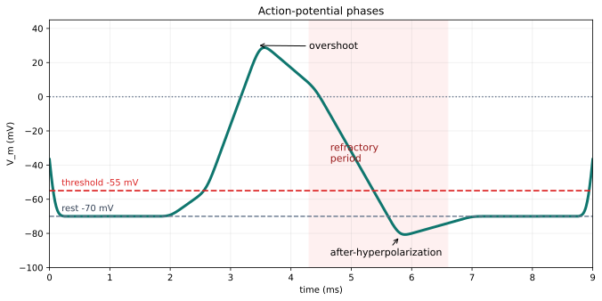
An action potential is a timed sequence of membrane states, not a generic bump.
What this figure is: A canonical voltage-time graph for labeling rest, threshold, depolarization, peak, repolarization, after-hyperpolarization, and refractory timing.
What this figure is not: It is not a raw recording from one specific neuron.
Source note: Generated locally from standard action-potential phase values and OpenStax-style graph interpretation.
Animation Storyboard
Storyboard for an action potential animation. Each frame should pair channel state with the matching segment of the voltage trace.
What this storyboard is: A frame-by-frame teaching script for sodium and potassium channel timing.
What this storyboard is not: It is not a video file or a complete Hodgkin-Huxley simulation.
Source note: Generated locally from introductory action-potential and channel-timing concepts.
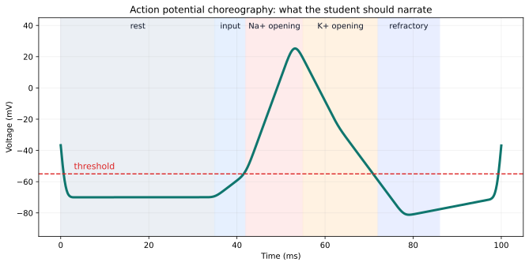
Action potential phases can be narrated by ion-channel events.
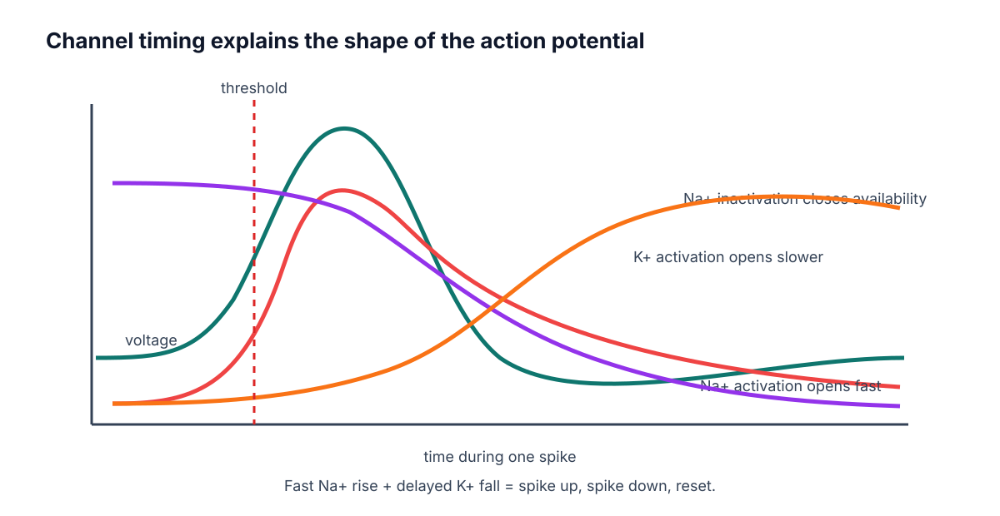
Channel timing explains spike shape.
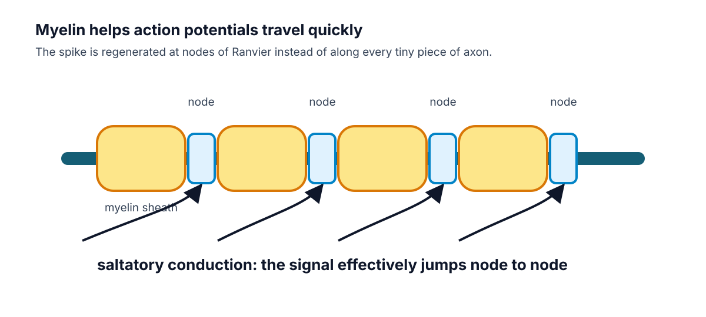
Myelin and nodes speed propagation.
Quick Check: Visual opener
Question: Why should an action potential be read left to right?
Answer: It is a timed sequence of membrane and channel states.
Core Concept Lesson
At threshold, voltage-gated Na+ channels open quickly. Na+ entry depolarizes the membrane, which opens more Na+ channels. This positive feedback makes the rising phase. The spike ends because Na+ channels inactivate and K+ channels open, pulling voltage back downward. The refractory period helps the spike travel forward. Myelin speeds propagation by letting the signal regenerate at nodes.
Quick Check: Core concept
Question: What feedback starts the rising phase?
Answer: Depolarization opens voltage-gated Na+ channels, which causes more depolarization.
Graph/Diagram-Reading Block
Read the action-potential phase plot from left to right. First mark rest near -70 mV. Second mark threshold near -55 mV. Third trace the fast rising phase and connect it to Na+ activation. Fourth mark the peak or overshoot above 0 mV. Fifth trace repolarization and after-hyperpolarization and connect them to Na+ inactivation plus K+ opening. Last, mark the refractory period as a time window, not as a single voltage value.
Quick Check: Graph/diagram reading
Question: What is the refractory period: a time window or a voltage value?
Answer: A time window after the spike.
Worked Example Box A
Study move: Cover the solution first, try the problem, then compare your reasoning with the worked solution.
Problem: A voltage trace starts at -70 mV, crosses -55 mV, peaks near +30 mV, falls to -80 mV, then returns to -70 mV. Label the phases.
Solution: Rest, threshold, depolarization/rising phase, peak, repolarization/falling phase, hyperpolarization, reset.
Quick Check A With Answer
Question: What opens fast during the rising phase?
Answer: Voltage-gated Na+ channels.
Basic Calculation
Task: A trace moves from -70 mV at rest to -55 mV at threshold, then to +30 mV at the peak, then to -80 mV during after-hyperpolarization. Compute the change from rest to threshold and from rest to peak.
Answer: Rest to threshold is +15 mV because the voltage becomes less negative. Rest to peak is +100 mV because +30 - (-70) = 100 mV.
Worked Example Box B
Study move: Cover the solution first, try the problem, then compare your reasoning with the worked solution.
Problem: Why would myelin make an axon faster if channels are concentrated at nodes?
Solution: The signal does not need to be regenerated continuously along every membrane patch. It spreads under myelin and is boosted at nodes, so conduction is faster.
Quick Check B With Answer
Question: What two events help end the spike?
Answer: Na+ channel inactivation and delayed K+ channel opening.
Mini-Lab or Code
Print or redraw the action-potential phase plot and cover the labels. Add your own labels in this order: rest, threshold, rising phase, peak, falling phase, after-hyperpolarization, refractory period. Then run notebooks/chapter04_action_potentials_and_propagation.ipynb or sketch a simple trace from points. The goal is to connect the graph shape to channel events, not to memorize a decorative curve.
Quick Check: Mini-lab
Question: What is the goal of labeling the AP trace from memory?
Answer: To connect each graph phase to a channel event.
Interactive Exercise
Use anim_01_action_potential_storyboard.md as an animation rehearsal. For each frame, point to the matching part of the voltage trace and say which channel state changed.
Quick Check: Interactive exercise
Question: In the storyboard, what must each frame pair together?
Answer: A channel state and the matching part of the voltage trace.
Retrieval Quiz and Reflection
- What event starts the fast rising phase?
- What two events end the spike?
- Why does the refractory period support one-way travel?
- Why does myelin speed propagation?
Answers: Voltage-gated Na+ channels open; Na+ channels inactivate and K+ channels open; the membrane behind the spike is temporarily unable or less able to fire; myelin lets the signal spread quickly and regenerate at nodes.
Assessment checkpoint: The student is ready to move on when she can narrate an unlabeled spike trace as a sequence of channel states.
Chapter Summary
Chapter 4 answers the opening question by connecting the visual story to a mechanism the student can explain without calculus. The key move is: At threshold, voltage-gated Na+ channels open quickly.
Homework
Questions
- Make a seven-row action-potential table: rest, threshold, depolarization, peak, repolarization, hyperpolarization, refractory period.
- Explain why action potentials usually travel one direction along an axon.
- Graph-reading: label threshold, peak, after-hyperpolarization, and refractory period on the phase plot.
- Quantitative: if threshold is -55 mV and rest is -70 mV, how many mV above rest is threshold?
- Misconception check: explain why a stronger stimulus does not usually make one giant action potential.
- Extension: use the storyboard to explain why Na+ channel inactivation matters.
Answer Key
- Each row should include voltage behavior and the main channel event.
- The region behind the spike is refractory, so it is temporarily unable or less able to fire again.
- Threshold is near the first major upward transition; peak is the top; after-hyperpolarization is the dip below rest; refractory is a time window after the spike.
- Threshold is 15 mV above rest because -55 - (-70) = +15 mV.
- Action potentials are mostly all-or-none; stronger stimuli more often affect spike number or timing.
- Na+ inactivation stops continued Na+ entry, helping end the rising phase and shape the refractory period.
Stretch Box
Compare unmyelinated and myelinated propagation. Explain why demyelination would slow or disrupt signaling.
Mentor Note
Ask the student to narrate the spike as a story of gates, not just a memorized curve.
Glossary Additions
- Action potential
- Threshold
- Depolarization
- Repolarization
- Hyperpolarization
- Refractory period
Source Notes
| Figure | Asset | Caption | Alt text | Source notes |
|---|---|---|---|---|
| 4.1 | action_potential_phase_plot.svg |
An action potential is a timed sequence of membrane states, not a generic bump. | Action-potential plot labeled with threshold, overshoot, refractory period, and after-hyperpolarization. | Generated locally in Python from schematic membrane-voltage values. |
| 4.2 | ap_phase_strip.svg |
Action potential phases can be narrated by ion-channel events. | Strip diagram connecting phases to Na+ and K+ channel behavior. | Original generated course plot. |
| 4.3 | gating_timeline.svg |
Channel timing explains spike shape. | Timeline of voltage, Na+ activation, Na+ inactivation, and K+ activation. | Original generated course figure. |
| 4.4 | myelin.svg |
Myelin and nodes speed propagation. | Myelinated axon with nodes of Ranvier and arrows. | Original generated course figure. |
Week E / Chapter 5. Spike Trains and Neural Information
Opening Question
How can spike timing carry information if individual spikes are mostly all-or-none?
Learning Goals
- Show that rate and timing are both features of spike trains.
- Define spike train, spike time, firing rate, ISI, standard deviation, and CV.
- Compute firing rate from spike count and time.
- Compute ISIs from spike times.
- Explain why variability is scientifically meaningful rather than just messy data.
Week Snapshot
| Field | Week E plan |
|---|---|
| Current minibook anchor | Spike trains are present but compressed |
| Revised textbook-style chapter | Spike trains and neural information |
| Prerequisites | Weeks A-D |
| Learning objectives | Distinguish single-spike amplitude from firing rate/timing; interpret rasters and rate plots |
| Basic calculations | Spike rate, ISI, mean ISI |
| Estimated total time | 4.0-4.5 h |
Weekly Lesson Spine
| Lesson component | Typical time | This chapter's job |
|---|---|---|
| Visual opener | 15-20 min | See spikes as time stamps instead of tall or short events. |
| Core concept lesson | 35-45 min | Define rate, ISI, raster, standard deviation, and CV. |
| Graph/diagram-reading block | 20-30 min | Read raster, ISI histogram, and summary metrics together. |
| Worked example | 15-25 min | Compute firing rate from spike count and time. |
| Basic calculation | 15-25 min | Compute ISIs and interpret regularity. |
| Mini-lab or code | 20-40 min | Build a spike-train dashboard from synthetic data. |
| Retrieval quiz and reflection | 10-15 min | Explain how same rate can hide different timing. |
Independent Study Scaffold
| Learning outcome | Misconception to address directly | Formative check | Support if stuck | Extension if ready |
|---|---|---|---|---|
| Interpret spike rasters and ISIs. | Information is only in spike height. | Convert a raster into a firing-rate and timing description. | Hand-count spikes before using the rate formula. | Discuss timing codes and population coding qualitatively. |
How to use this scaffold: Read the outcome before starting the chapter. After each section, answer the quick check before continuing. If the answer is shaky, use the support prompt immediately; if the answer is solid, try the extension prompt.
Prerequisites and Recap
Prerequisites: one action potential has a stereotyped shape. Recap: Chapter 4 explained single spikes. This chapter studies sequences of spikes.
Required Vocabulary
Use this table for the chapter, and use the cumulative Glossary when a term returns in a later week.
| Term | Student-facing definition |
|---|---|
| Spike train | Sequence of action-potential times. |
| Spike time | Time when voltage crosses threshold upward. |
| Firing rate | Spikes per second, measured in Hz. |
| ISI | Interspike interval, the time between consecutive spikes. |
| Standard deviation | A measure of spread around the mean. |
| CV | Coefficient of variation: standard deviation divided by mean. |
| Raster plot | Plot of spike times across repeated trials. |
Misconception Box
Use this misconception box actively: When one of these ideas appears, do not just mark it wrong. Replace it with the correction in your own words and give one piece of evidence from a figure, graph, or calculation.
- "Spike height is the main code." Individual spikes are mostly stereotyped, so timing, rate, and population activity matter.
- "Same firing rate means same spike train." Two spike trains can have the same count but different intervals.
- "Variability is just bad data." Variability can be measured and can reveal mechanisms or coding strategies.
- "Hz and ms are interchangeable." Hz is events per second; ms is time between events.
Visual Opener
Draw spikes as vertical tick marks. Weak input may produce a few ticks. Stronger input may produce more ticks. Repeated trials may produce ticks at slightly different times. The dashboard figure makes the key point: two trials can have the same number of spikes in the same time window, so their average rate looks similar, while their gaps between spikes reveal different timing regularity.
Concept Figure A: Raster And Rate
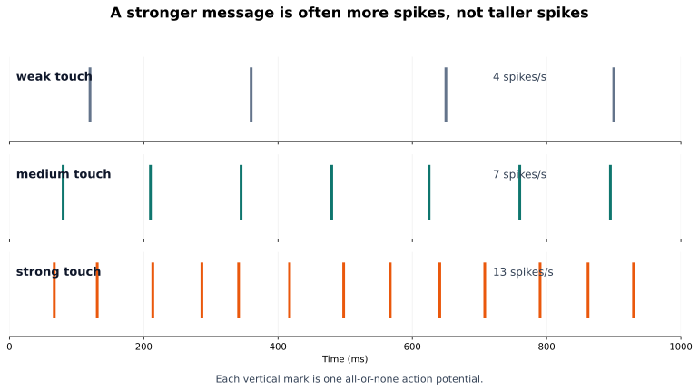
A stronger message is often more spikes, not taller spikes. Information can be carried by firing rate and timing, not by action-potential amplitude.
What this figure is: A teaching raster that separates spike count and timing from spike height.
What this figure is not: It is not a claim that firing rate is the only neural code.
Source note: Generated locally from synthetic teaching spike trains.
Reality Figure B: Spike-Train Dashboard
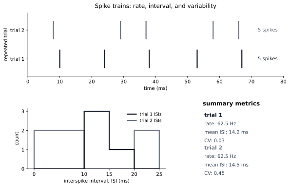
Rate, interval, and variability can be read directly from spike trains.
What this figure is: A synthetic data dashboard for reading rate, ISI, and variability together.
What this figure is not: It is not an Allen recording; it is clean teaching data designed to make the graph skills visible.
Source note: Generated locally from synthetic spike-time data.
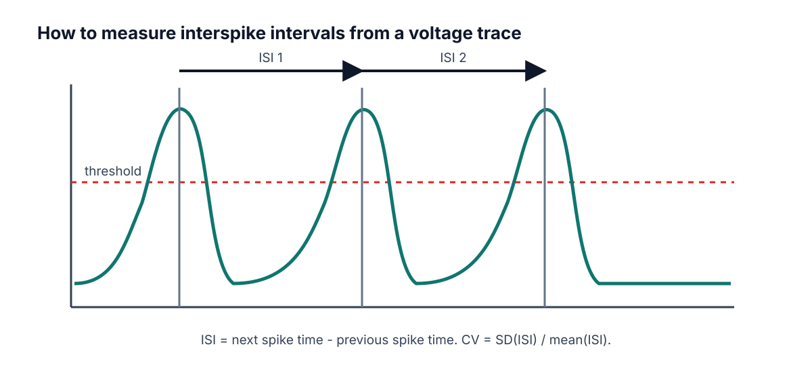
ISI is measured between consecutive threshold crossings.
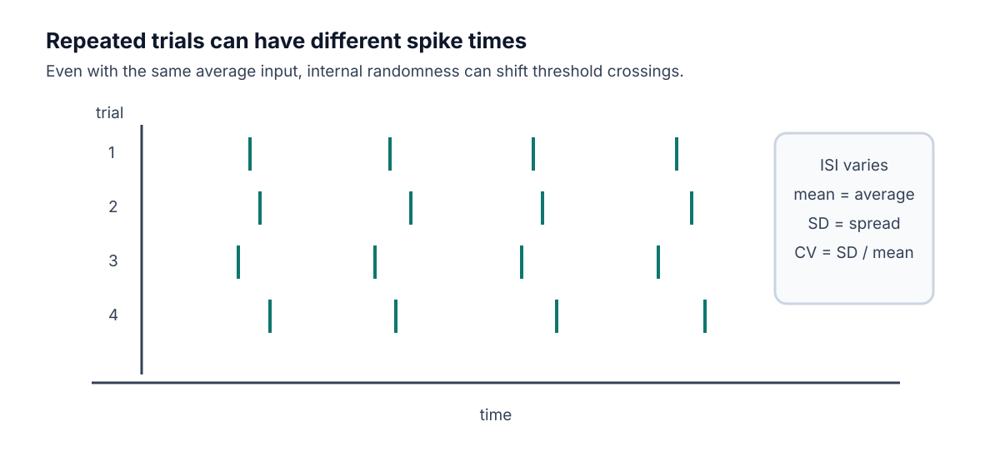
Repeated trials can show spike-time variability.
Quick Check: Visual opener
Question: In a raster, what does one tick mark represent?
Answer: One spike time.
Core Concept Lesson
A single spike is mostly all-or-none, so information often appears in rate, timing, and which neurons fire. ISIs turn spike timing into numbers. Mean ISI gives the average gap. Standard deviation gives spread. CV gives spread relative to average. Larger CV means more irregular timing.
Quick Check: Core concept
Question: Why can rate and timing both matter?
Answer: Rate counts spikes, while timing describes the gaps and patterns between spikes.
Graph/Diagram-Reading Block
Read the spike-train dashboard from top to bottom. In the raster, each tick is one spike time and each row is a trial. Count spikes in a fixed time window to estimate rate. Then measure gaps between neighboring ticks to get ISIs. Finally read the ISI histogram: a narrow cluster means regular timing, while a broad spread means more variability. Do not call two trials identical just because they have the same number of spikes.
Quick Check: Graph/diagram reading
Question: What does a broad ISI histogram suggest?
Answer: More variable or irregular spike timing.
Worked Example Box A
Study move: Cover the solution first, try the problem, then compare your reasoning with the worked solution.
Problem: A neuron fires 18 spikes in 3 seconds. What is the average firing rate?
Solution: 18 / 3 = 6 spikes per second = 6 Hz.
Quick Check A With Answer
Question: What does Hz mean?
Answer: Events per second.
Basic Calculation
Task: Spike times are 8, 29, 37, 58, and 66 ms. Compute the ISIs.
Answer: The ISIs are 21, 8, 21, and 8 ms. The alternating gaps show irregular timing even though the spike count is easy to count.
Worked Example Box B
Study move: Cover the solution first, try the problem, then compare your reasoning with the worked solution.
Problem: Spike times are 10, 24, 38, 53, and 67 ms. Compute ISIs and approximate firing rate from mean ISI.
Solution: ISIs are 14, 14, 15, 14 ms. Mean ISI is 14.25 ms = 0.01425 s. Rate is about 1/0.01425 = 70.2 Hz.
Quick Check B With Answer
Question: What does a larger CV mean?
Answer: More irregular timing relative to the average interval.
Mini-Lab or Code
Run notebooks/chapter05_spike_trains_rate_and_variability.ipynb or make a spreadsheet with two rows of spike times. For each row, compute ISIs and average rate. Then make one claim that uses both pieces of evidence, such as: "These trials have similar spike counts but different interval patterns."
Quick Check: Mini-lab
Question: Why compare spike count and ISIs in the same claim?
Answer: The same count can hide different timing patterns.
Interactive Exercise
Use neuro_book/datasets/synthetic_spike_times.csv. Pick one condition, make a raster by hand or in a spreadsheet, then compute the first three ISIs.
Quick Check: Interactive exercise
Question: Before computing rate, what should you identify in the CSV or raster?
Answer: The time window and the spike times in that window.
Retrieval Quiz and Reflection
- Define spike train, firing rate, ISI, raster plot, and CV.
- A train has 12 spikes in 2 seconds. What is the firing rate?
- Why can two trials with the same rate still look different?
- What does a larger CV suggest?
Answers: A spike train is a sequence of spike times; firing rate is spikes per second; ISI is the gap between spikes; a raster shows spike times across trials; CV is relative interval variability. 12 spikes/2 seconds = 6 Hz. Same rate can hide different timing because the gaps may differ. Larger CV suggests more irregular timing.
Assessment checkpoint: The student is ready to move on when she can read a raster and explain what the graph shows before naming a mechanism.
Chapter Summary
Chapter 5 answers the opening question by connecting the visual story to a mechanism the student can explain without calculus. The key move is: A single spike is mostly all-or-none, so information often appears in rate, timing, and which neurons fire.
Homework
Questions
- Compute ISIs for spike times 80, 125, 166, 210, and 260 ms.
- Explain why two spike trains can have the same firing rate but different timing.
- Graph-reading: in a raster, what does one tick mark mean and what does one row mean?
- Quantitative: a neuron fires 24 spikes in 3 seconds. What is the firing rate?
- Misconception check: explain why taller spikes are not the main code in this chapter.
- Extension: use
synthetic_spike_times.csvto choose one condition and compute two ISIs.
Answer Key
- ISIs are 45, 41, 44, and 50 ms.
- They can contain the same number of spikes in the same time window but have different gaps between spikes.
- One tick is one spike time; one row is usually one trial.
- 24/3 = 8 Hz.
- Individual spikes are mostly stereotyped; rate, timing, and which neurons fire can carry information.
- Answers depend on condition. For low_noise trial 1, the first two ISIs are 103 ms and 104 ms.
Stretch Box
Find or sketch two spike trains with the same rate but different CV. Explain which one is more regular.
Mentor Note
Make the student calculate from spike times by hand before using a spreadsheet. The hand calculation makes CV meaningful.
Glossary Additions
- Spike train
- Spike time
- Firing rate
- ISI
- CV
- Raster plot
Source Notes
| Figure | Asset | Caption | Alt text | Source notes |
|---|---|---|---|---|
| 5.1 | spike_code.svg |
Stimulus strength can be represented by spike timing and frequency. | Spike trains for weak, medium, and strong inputs. | Original generated course plot. |
| 5.2 | isi_measurement.svg |
ISI is measured between consecutive threshold crossings. | Voltage trace with interspike intervals labeled. | Original generated course figure. |
| 5.3 | random_trials.svg |
Repeated trials can show spike-time variability. | Raster-like plot with jittered spike times across trials. | Original generated course figure. |
| spike_train_dashboard | spike_train_dashboard.svg |
Rate, interval, and variability can be read directly from spike trains. | A dashboard with a raster plot, an interspike-interval histogram, and a summary metric panel. | Generated locally from synthetic teaching data. |
Week F / Chapter 6. Circuits and Hodgkin-Huxley Intuition
Opening Question
How did Hodgkin and Huxley turn the spike story into a measurable model?
Learning Goals
- Translate capacitance, conductance, current, and reversal potential into neuron language.
- Read I_ion = g_ion (V_m - E_ion) as a sentence.
- Explain current clamp, voltage clamp, and patch clamp at a beginner level.
- Read the HH voltage equation without solving calculus.
Week Snapshot
| Field | Week F plan |
|---|---|
| Current minibook anchor | HH week |
| Revised textbook-style chapter | Circuits and Hodgkin-Huxley intuition |
| Prerequisites | Weeks A-E |
| Learning objectives | Read membrane-as-capacitor analogy; interpret conductance and reversal potential; explain clamp experiments |
| Basic calculations | Use I = g(V_m - E) qualitatively and numerically in simple cases |
| Estimated total time | 4.5-5.0 h |
Weekly Lesson Spine
| Lesson component | Typical time | This chapter's job |
|---|---|---|
| Visual opener | 15-20 min | Translate the membrane into an equivalent circuit picture. |
| Core concept lesson | 35-45 min | Define capacitance, conductance, current, and reversal potential. |
| Graph/diagram-reading block | 20-30 min | Read current clamp, voltage clamp, and HH simulation panels. |
| Worked example | 15-25 min | Use Q = C V_m as a unit-aware analogy. |
| Basic calculation | 15-25 min | Compute a driving force from V_m and E_ion. |
| Mini-lab or code | 20-40 min | Run the HH-intuition notebook and interpret each panel. |
| Retrieval quiz and reflection | 10-15 min | Explain what each HH term means in words. |
Independent Study Scaffold
| Learning outcome | Misconception to address directly | Formative check | Support if stuck | Extension if ready |
|---|---|---|---|---|
| Read HH-like current statements in words. | Voltage and current are the same thing. | Translate I = g(V_m - E) into plain English. | Use water-flow or circuit analogies and write units repeatedly. | Add RC time-constant intuition or simple clamp traces. |
How to use this scaffold: Read the outcome before starting the chapter. After each section, answer the quick check before continuing. If the answer is shaky, use the support prompt immediately; if the answer is solid, try the extension prompt.
Prerequisites and Recap
Prerequisites: action potentials are caused by Na+ and K+ channel timing. Recap: Chapter 4 named the channel events. This chapter shows how those events become a model.
Required Vocabulary
Use this table for the chapter, and use the cumulative Glossary when a term returns in a later week.
| Term | Student-facing definition |
|---|---|
| Capacitance | Ability to store separated charge. |
| Current | Movement of charge. |
| Conductance | Ease of current flow through a pathway. |
| Current clamp | Inject current and measure voltage. |
| Voltage clamp | Hold voltage and measure current. |
| Patch clamp | Measure current through a membrane patch or single channel. |
| Gate variable | HH variable summarizing channel activation or inactivation. |
Misconception Box
Use this misconception box actively: When one of these ideas appears, do not just mark it wrong. Replace it with the correction in your own words and give one piece of evidence from a figure, graph, or calculation.
- "A model is a perfect copy of the neuron." A model is a purposeful simplification.
- "Conductance is the same thing as voltage." Conductance is ease of flow; voltage is electrical difference.
- "The HH equation is impossible without calculus." This chapter only asks the student to read the terms as a balance story.
- "Current clamp and voltage clamp measure the same thing." Current clamp injects current and reads voltage; voltage clamp holds voltage and reads current.
Visual Opener
The HH circuit picture replaces membrane biophysics with a capacitor plus Na+, K+, and leak conductance pathways. The picture is a bridge between a biological membrane and equations.
Concept Figure A: Hodgkin-Huxley Circuit
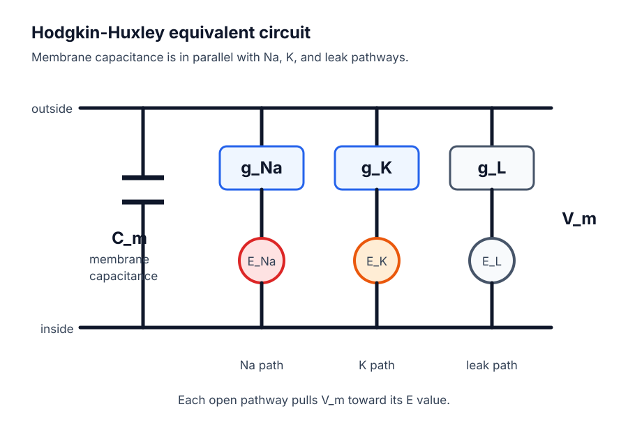
Hodgkin-Huxley turns membrane biophysics into a circuit language. The membrane stores charge, while ion-channel pathways pull voltage toward their reversal potentials.
What this figure is: A circuit analogy for capacitance, conductance, and reversal potentials.
What this figure is not: It is not saying the membrane is literally built from metal wires and batteries.
Source note: Generated locally from Hodgkin-Huxley equivalent-circuit interpretation and NEURON/NetPyNE-relevant model language.
Reality Figure B: HH-Style Model Output
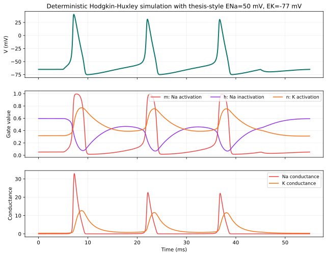
HH-style simulation shows fast sodium and slower potassium conductance.
What this figure is: A simulation output that connects the circuit idea to voltage and conductance traces.
What this figure is not: It is not a full molecular model of every channel protein.
Source note: Generated locally as a beginner HH-style model output.
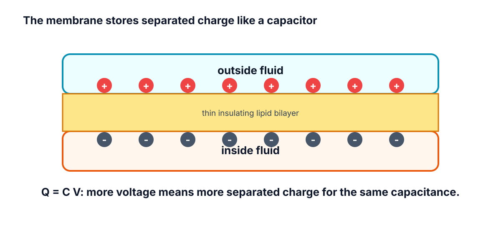
Membrane capacitance means separated charge can be stored.
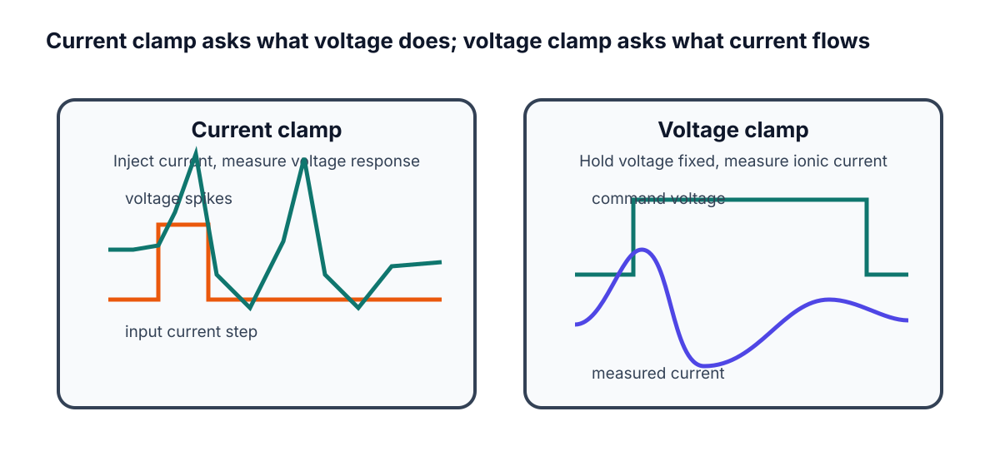
Current clamp and voltage clamp answer different questions.
Quick Check: Visual opener
Question: What does the circuit analogy help you translate?
Answer: Membrane capacitance, ion conductances, and reversal potentials.
Core Concept Lesson
The membrane behaves partly like a capacitor because it separates charge. Ion channels are conductance pathways because open channels let current flow. Each ion pathway pulls voltage toward its reversal potential. The HH equation says voltage changes when applied current and ion currents do not balance. The student does not need calculus yet; she needs to know what each term means.
Quick Check: Core concept
Question: What changes when more channels of one type open?
Answer: Conductance for that ion pathway increases.
Graph/Diagram-Reading Block
Read the HH simulation as linked panels. Start with V_m: find when the spike rises and falls. Then compare g_Na and g_K: sodium conductance rises earlier and faster, while potassium conductance is slower and helps bring V_m back down. Finally connect this to the circuit: each conductance pathway pulls V_m toward its own reversal potential. The graph skill is matching timing across panels.
Quick Check: Graph/diagram reading
Question: Which conductance rises earlier in the HH-style plot?
Answer: g_Na rises earlier and faster than g_K.
Worked Example Box A
Study move: Cover the solution first, try the problem, then compare your reasoning with the worked solution.
Problem: Use Q = C V_m with C = 1 microfarad and V_m = 70 mV.
Solution: 70 mV = 0.070 V, so Q = 1 microfarad x 0.070 V = 0.070 microcoulomb.
Quick Check A With Answer
Question: What changes when channels open?
Answer: Conductance increases for that ion pathway.
Basic Calculation
Task: If V_m = -70 mV and E_Na = +50 mV, compute V_m - E_Na. Is the sodium driving force large or small?
Answer: V_m - E_Na = -70 - 50 = -120 mV. The magnitude is large. If Na+ channels open, sodium strongly pulls V_m upward toward E_Na.
Worked Example Box B
Study move: Cover the solution first, try the problem, then compare your reasoning with the worked solution.
Problem: If V_m = -65 mV and E_Na = +50 mV, is sodium pull large or small?
Solution: Large. V_m is 115 mV away from E_Na, so opening Na+ channels strongly pulls voltage upward.
Quick Check B With Answer
Question: What does voltage clamp measure?
Answer: Current while voltage is held at a chosen value.
Mini-Lab or Code
Run notebooks/chapter06_circuits_and_hh_intuition.ipynb or notebooks/week6_hh_intuition.ipynb. For every plotted panel, write one sentence beginning, "This panel shows..." Do not change parameters until the first run is understood. The goal is to explain the figure, not to make the most complex simulation.
Quick Check: Mini-lab
Question: Why should the student explain each panel before changing parameters?
Answer: Understanding the baseline figure prevents parameter play from becoming guessing.
Interactive Exercise
Use the HH circuit figure as a matching game. Match each graph panel to one circuit part: V_m, C_m, g_Na, g_K, leak, and reversal potential.
Quick Check: Interactive exercise
Question: In I_ion = g_ion(V_m - E_ion), what does V_m - E_ion represent?
Answer: Driving force: how far V_m is from that ion's reversal potential.
Retrieval Quiz and Reflection
- Translate capacitance, current, and conductance into neuron language.
- What does opening a channel change?
- What does voltage clamp hold fixed, and what does it measure?
- Read
I_ion = g_ion (V_m - E_ion)as a sentence.
Answers: Capacitance stores separated charge, current is charge movement, and conductance is ease of ion flow. Opening a channel increases conductance. Voltage clamp holds voltage fixed and measures current. Ion current depends on how open the pathway is and how far V_m is from that ion's reversal potential.
Assessment checkpoint: The student is ready to move on when she can point to V_m, g_Na, g_K, and E terms in the circuit figure and explain each in ordinary language.
Chapter Summary
Chapter 6 answers the opening question by connecting the visual story to a mechanism the student can explain without calculus. The key move is: The membrane behaves partly like a capacitor because it separates charge.
Homework
Questions
- Write the HH equation as a paragraph using capacitance, applied current, sodium, potassium, leak, conductance, and reversal potential.
- Make a two-column table comparing current clamp and voltage clamp.
- Graph-reading: in the HH-style simulation, which conductance rises earlier, g_Na or g_K?
- Quantitative: if V_m = -65 mV and E_K = -90 mV, compute V_m - E_K.
- Misconception check: explain why the circuit diagram is an analogy.
- Extension: describe one reason a simplified model can still be scientifically useful.
Answer Key
- A correct paragraph says voltage changes when applied current and Na+, K+, and leak currents do not balance; conductances and reversal potentials determine those currents.
- Current clamp: inject current, observe voltage. Voltage clamp: hold voltage, measure current.
- g_Na rises earlier and faster than g_K in the teaching simulation.
- V_m - E_K = -65 - (-90) = +25 mV.
- It uses circuit parts to represent membrane properties; the cell is not literally metal wires and batteries.
- A model can isolate one mechanism, make predictions, and help interpret data while leaving out details.
Stretch Box
Explain why a model can be useful even if it is simplified. Name one thing the HH model includes and one thing a beginner version leaves out.
Mentor Note
Keep calculus notation out of the first explanation. Let dV/dt mean 'how fast voltage changes' only after the physical terms are clear.
Glossary Additions
- Capacitance
- Current
- Conductance
- Current clamp
- Voltage clamp
- Patch clamp
Source Notes
| Figure | Asset | Caption | Alt text | Source notes |
|---|---|---|---|---|
| 6.1 | hh_equivalent_circuit.svg |
The membrane behaves like a capacitor in parallel with Na, K, and leak pathways. | Equivalent-circuit figure labeling V_m, C_m, g_Na, g_K, leak conductance, and E terms. | Generated locally as a vector Hodgkin-Huxley equivalent-circuit figure. |
| 6.2 | capacitance.svg |
Membrane capacitance means separated charge can be stored. | Membrane capacitor analogy with separated charges. | Original generated course figure. |
| 6.3 | clamp.svg |
Current clamp and voltage clamp answer different questions. | Comparison of current clamp and voltage clamp traces. | Original generated course figure. |
| 6.4 | hh_simulation.svg |
HH-style simulation shows fast sodium and slower potassium conductance. | Voltage, gate variables, and conductance plots. | Original generated course plot. |
Week G / Chapter 7. From Single Channels to Timing Variability
Opening Question
Why are spike times not perfectly identical even when the input looks similar?
Learning Goals
- Explain what a single-channel recording shows.
- Define stochastic, open probability, open fraction, and channel noise.
- Explain why larger channel populations average randomness better.
- Connect random channel openings to spike-time variability near threshold.
Week Snapshot
| Field | Week G plan |
|---|---|
| Current minibook anchor | Random channels and variability |
| Revised textbook-style chapter | From single channels to timing variability |
| Prerequisites | Weeks A-F |
| Learning objectives | Explain stochastic gating, channel noise, finite-size fluctuations, CV of ISI, trial-to-trial jitter |
| Basic calculations | ISI SD and CV; open-fraction fluctuations from repeated trials |
| Estimated total time | 4.5-5.0 h |
Weekly Lesson Spine
| Lesson component | Typical time | This chapter's job |
|---|---|---|
| Visual opener | 15-20 min | Read single-channel current steps as open/closed events. |
| Core concept lesson | 35-45 min | Define stochastic behavior, open probability, open fraction, and channel noise. |
| Graph/diagram-reading block | 20-30 min | Compare patch-clamp steps, state diagrams, and noise-scaling histograms. |
| Worked example | 15-25 min | Compute open fraction from time open. |
| Basic calculation | 15-25 min | Compute open fraction from number of open channels. |
| Mini-lab or code | 20-40 min | Use coins or a noisy threshold notebook to connect randomness to CV. |
| Retrieval quiz and reflection | 10-15 min | Explain how molecular randomness can affect spike timing. |
Independent Study Scaffold
| Learning outcome | Misconception to address directly | Formative check | Support if stuck | Extension if ready |
|---|---|---|---|---|
| Explain why finite random channel populations can jitter spike timing. | Randomness means there is no mechanism. | Compute ISI mean and CV from a short list. | Use coin-flip analogies and repeated-trial visuals. | Compare deterministic and stochastic simulations. |
How to use this scaffold: Read the outcome before starting the chapter. After each section, answer the quick check before continuing. If the answer is shaky, use the support prompt immediately; if the answer is solid, try the extension prompt.
Prerequisites and Recap
Prerequisites: HH variables describe average channel behavior. Recap: Chapter 6 used smooth conductances. This chapter asks what changes when channels are individual random molecules.
Required Vocabulary
Use this table for the chapter, and use the cumulative Glossary when a term returns in a later week.
| Term | Student-facing definition |
|---|---|
| Stochastic | Involving randomness. |
| Open probability | Chance that a channel is open. |
| Open fraction | Open channels divided by total channels. |
| Channel noise | Fluctuations from random channel openings and closings. |
| Markov state | Simplified channel condition such as closed, open, or inactivated. |
| Threshold jitter | Small shifts in spike time caused by voltage fluctuations near threshold. |
Misconception Box
Use this misconception box actively: When one of these ideas appears, do not just mark it wrong. Replace it with the correction in your own words and give one piece of evidence from a figure, graph, or calculation.
- "Random means unscientific." Random processes can have measurable probabilities and patterns.
- "A channel opens halfway when the current is half as large." In the beginner picture, one channel switches open or closed; averages can be fractional.
- "Noise disappears when many channels are present." Many channels reduce relative noise, but do not make molecular randomness vanish.
- "Variability only matters after spikes happen." Noise near threshold can help decide when spikes happen.
Visual Opener
A patch-clamp trace looks like square steps. Closed means baseline. Open means current step. Many channels summed together look smoother, but the molecules underneath are still random.
Concept Figure A: Patch Clamp And Single-Channel Trace
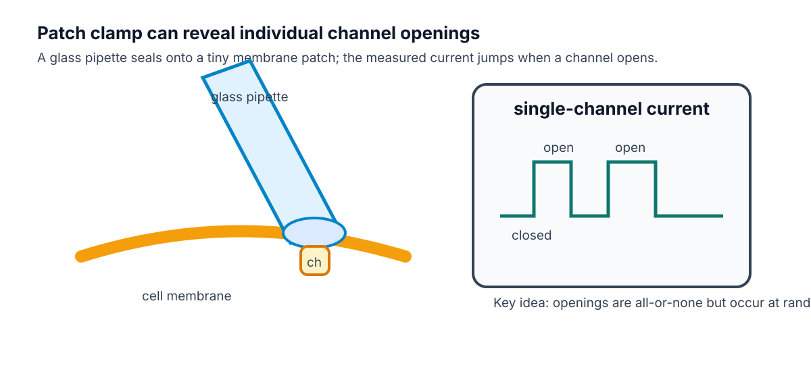
Single channels open all-or-none, but the timing of openings is random.
What this figure is: A conceptual patch-clamp setup paired with a square-step current trace.
What this figure is not: It is not a raw trace from the student's own experiment.
Source note: Conceptual redraw based on standard patch-clamp and single-channel recording teaching diagrams.
Reality Figure B: Noise To Timing Jitter
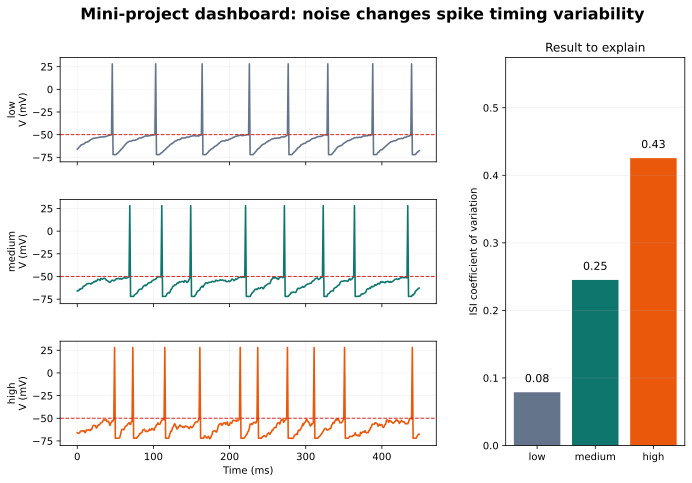
Small fluctuations can shift threshold crossing time. Near threshold, noise changes spike timing even when the average input is similar.
What this figure is: A model-data panel that links voltage fluctuations, spike timing, ISIs, and CV.
What this figure is not: It is not proof that every biological variability source is channel noise.
Source note: Generated locally from a simple threshold/noise modeling workflow compatible with the capstone arc.
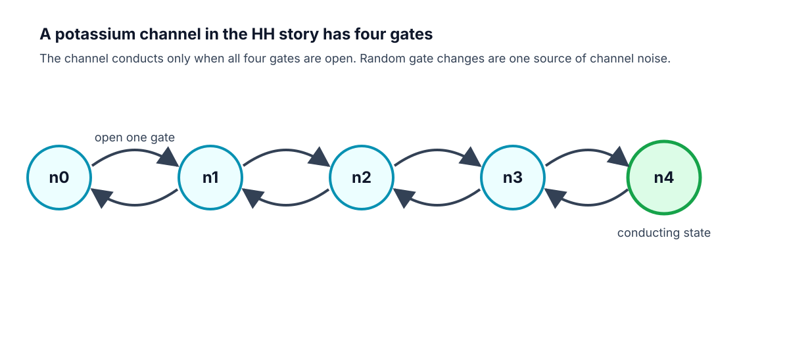
A simplified K+ channel state diagram prepares the student for stochastic channel models.
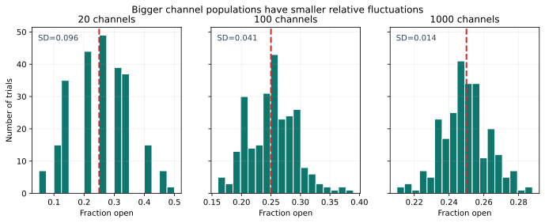
Bigger channel populations have smaller relative fluctuations.
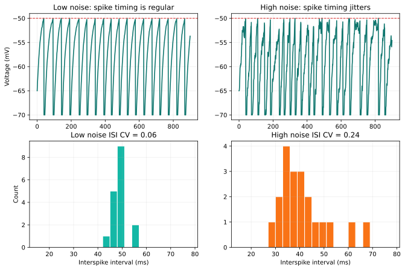
A noisy threshold model shows how noise can change ISI variability.
Quick Check: Visual opener
Question: What does a square step in a single-channel trace usually mean?
Answer: A channel changed state, such as closed to open or open to closed.
Core Concept Lesson
A single channel does not usually open halfway in the beginner picture. It switches between closed and open states. The time of switching is random. If the membrane has many channels, random openings partly average out. If the membrane has fewer channels or the neuron is near threshold, random fluctuations can change exactly when the next spike occurs.
Quick Check: Core concept
Question: How can one channel be all-or-none while a population average is fractional?
Answer: Each channel is open or closed, but the fraction open across many channels can be between 0 and 1.
Graph/Diagram-Reading Block
Read the patch-clamp and noise figures in layers. In the single-channel trace, a flat baseline means closed and a step means open. In the state diagram, arrows mean possible transitions, not guaranteed schedules. In the open-fraction histogram, compare spread: more channels produce a tighter distribution. In the noisy threshold figure, connect voltage wobble to changed threshold-crossing times and wider ISI distributions.
Quick Check: Graph/diagram reading
Question: What happens to relative fluctuation when the number of channels gets larger?
Answer: It usually becomes smaller because random openings average out better.
Worked Example Box A
Study move: Cover the solution first, try the problem, then compare your reasoning with the worked solution.
Problem: A channel is open for 6 ms in a 20 ms recording. What is the open fraction?
Solution: 6/20 = 0.30.
Quick Check A With Answer
Question: Why does a single-channel trace look jumpy?
Answer: Because the channel switches between closed and open states.
Basic Calculation
Task: At one instant, 18 out of 60 channels are open. What is the open fraction?
Answer: 18/60 = 0.30. This means 30% of the channels are open at that instant.
Worked Example Box B
Study move: Cover the solution first, try the problem, then compare your reasoning with the worked solution.
Problem: 30 out of 100 channels are open at one moment. What is the open fraction?
Solution: 30/100 = 0.30.
Quick Check B With Answer
Question: Why do larger channel populations have smaller relative noise?
Answer: Random openings average out better when many channels are summed.
Mini-Lab or Code
Do the coin mini-lab first: flip 20 coins ten times and write the fraction heads each time; then repeat with 100 coins or a spreadsheet random-number simulation. The larger group should fluctuate less in relative terms. Then run notebooks/chapter07_single_channel_noise.ipynb and explain how increasing noise changes spike count, rate, or CV in the simple threshold model.
Quick Check: Mini-lab
Question: Why compare 20 coin flips with 100 coin flips?
Answer: To see that larger populations have less relative randomness.
Interactive Exercise
Use the noisy threshold notebook as a slider exercise. Change only noise_sd, rerun, and record spike count, rate, and CV for three values.
Quick Check: Interactive exercise
Question: When changing noise_sd, what variables should you record?
Answer: Spike count, firing rate, and CV or ISI spread.
Retrieval Quiz and Reflection
- Define stochastic, open probability, open fraction, and channel noise.
- Why can an average open fraction be 0.30 even though one channel is either closed or open?
- Why does noise matter more near threshold?
- Give the causal chain from random channel opening to variable ISI.
Answers: Stochastic means random; open probability is chance of being open; open fraction is open channels divided by total channels; channel noise is fluctuation from random openings and closings. A population average can be fractional even when individual channels are all-or-none. Near threshold, small voltage fluctuations can change crossing time. Random opening -> current fluctuation -> voltage fluctuation -> threshold jitter -> ISI variability.
Assessment checkpoint: The student is ready for the capstone when she can explain why a random molecular event can produce a measurable change in a spike-train statistic.
Chapter Summary
Chapter 7 answers the opening question by connecting the visual story to a mechanism the student can explain without calculus. The key move is: A single channel does not usually open halfway in the beginner picture.
Homework
Questions
- Flip 20 coins ten times and record fraction heads. Then flip 100 coins ten times. Which set is less jumpy?
- Write the chain from molecular event to spike-time variability.
- Graph-reading: in the patch-clamp trace, what does a square step usually represent?
- Quantitative: 12 channels out of 40 are open. What is the open fraction?
- Misconception check: explain why "random" does not mean "not measurable."
- Extension: explain why threshold makes small noise more important.
Answer Key
- The 100-coin fractions should usually be less jumpy because larger samples average randomness better.
- Random channel openings -> noisy current -> voltage fluctuation -> threshold jitter -> variable ISIs.
- A square step usually represents a channel opening or closing, changing current.
- 12/40 = 0.30.
- Random processes can still have probabilities, averages, distributions, and repeatable statistics.
- Near threshold, a small voltage fluctuation can shift whether or when V_m crosses threshold.
Stretch Box
Explain why channel noise may matter more near threshold than far below threshold.
Mentor Note
This is the thesis bridge. Keep the claim qualitative: random molecular events can influence macroscopic spike timing. Do not require stochastic calculus.
Glossary Additions
- Stochastic
- Open probability
- Open fraction
- Channel noise
- Threshold jitter
Source Notes
| Figure | Asset | Caption | Alt text | Source notes |
|---|---|---|---|---|
| 7.1 | patch_clamp_single_channel_trace.svg |
Single channels open all-or-none, but the timing of openings is random. | Conceptual patch-clamp cartoon paired with a step-like single-channel current trace. | Conceptual redraw based on standard Molecular Biology of the Cell patch-clamp teaching diagrams. |
| 7.2 | k_channel_states.svg |
A simplified K+ channel state diagram prepares the student for stochastic channel models. | State diagram from closed states to conducting state. | Original generated course figure. |
| 7.3 | channel_noise_scaling.svg |
Bigger channel populations have smaller relative fluctuations. | Histograms comparing open fraction spread for different channel counts. | Original generated course plot. |
| 7.4 | lif_noise.svg |
A noisy threshold model shows how noise can change ISI variability. | Voltage traces and ISI histograms for low and high noise. | Original generated course plot. |
Week H / Chapter 8. Evidence, Explanation, and Communication
Opening Question
Can the student make one evidence-based claim about noise and spike timing?
Learning Goals
- Write a research question and hypothesis.
- Identify independent, dependent, and controlled variables.
- Make at least one voltage trace and one summary graph.
- Present a claim, evidence, limitation, and next step to other students.
Week Snapshot
| Field | Week H plan |
|---|---|
| Current minibook anchor | Mini-project and final talk |
| Revised textbook-style chapter | Evidence, explanation, and communication |
| Prerequisites | All earlier weeks |
| Learning objectives | Form a hypothesis, run a simple model, summarize evidence, state limitations, communicate clearly |
| Basic calculations | Compare conditions, summarize means/CVs |
| Estimated total time | 4.0-5.0 h |
Weekly Lesson Spine
| Lesson component | Typical time | This chapter's job |
|---|---|---|
| Visual opener | 15-20 min | Read an example dashboard before building a final one. |
| Core concept lesson | 35-45 min | Turn the course story into a testable question and claim. |
| Graph/diagram-reading block | 20-30 min | Interpret traces, raster/ISI evidence, and CV summary together. |
| Worked example | 15-25 min | Convert an idea into a hypothesis. |
| Basic calculation | 15-25 min | Compare CV values and write a result sentence. |
| Mini-lab or code | 20-40 min | Run the capstone notebook and export one evidence figure. |
| Retrieval quiz and reflection | 10-15 min | Rehearse the final claim, evidence, limitation, and next step. |
Independent Study Scaffold
| Learning outcome | Misconception to address directly | Formative check | Support if stuck | Extension if ready |
|---|---|---|---|---|
| Make and defend a claim with data. | A graph alone is a conclusion. | Write a CER paragraph: claim, evidence, reasoning. | Use sentence frames and graph-interpretation prompts. | Add limitation analysis and a next-step experimental design. |
How to use this scaffold: Read the outcome before starting the chapter. After each section, answer the quick check before continuing. If the answer is shaky, use the support prompt immediately; if the answer is solid, try the extension prompt.
Prerequisites and Recap
Prerequisites: chapters 1-7. Recap: neuron shape supports signaling, ions create voltage, synapses sum inputs, action potentials propagate, spike trains carry timing, HH gives model language, and single channels motivate noise.
Required Vocabulary
Use this table for the chapter, and use the cumulative Glossary when a term returns in a later week.
| Term | Student-facing definition |
|---|---|
| Research question | Focused question the project answers. |
| Hypothesis | Predicted answer plus reasoning. |
| Independent variable | What the student changes. |
| Dependent variable | What the student measures. |
| Control | Condition or variable kept the same. |
| Limitation | What the model or evidence does not prove. |
Misconception Box
Use this misconception box actively: When one of these ideas appears, do not just mark it wrong. Replace it with the correction in your own words and give one piece of evidence from a figure, graph, or calculation.
- "The project proves how all real neurons behave." The project supports one claim inside a simplified model.
- "A prettier dashboard is better science." The best figure is the one that makes the evidence easiest to read.
- "A limitation weakens the presentation." A clear limitation makes the scientific claim more honest.
- "Changing many parameters is more impressive." One clean independent variable is stronger for a beginner capstone.
Visual Opener
The project dashboard combines raw traces, spike times, ISIs, and one clean comparison graph. The audience should be able to see the evidence before hearing the conclusion.
Concept Figure A: Project Workflow
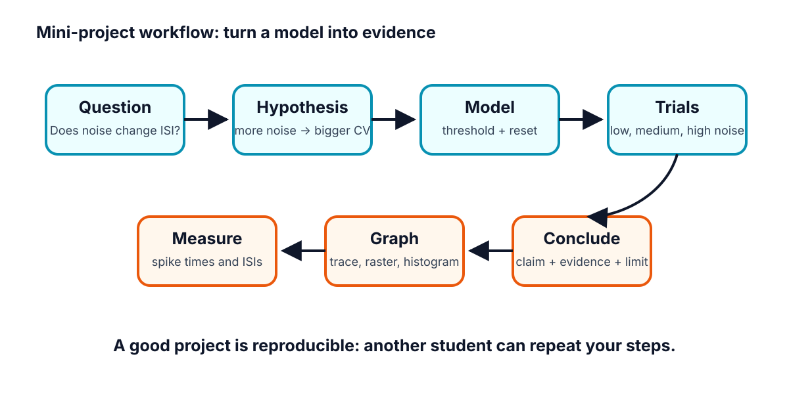
Capstone workflow from question to conclusion.
What this figure is: A planning map for turning a question into an evidence-based claim.
What this figure is not: It is not the result; it is the path for producing the result.
Source note: Original generated course workflow figure.
Reality Figure B: Noise-To-Jitter Evidence Panel
Example project dashboard with traces and summary graph.
What this figure is: A model-output dashboard that the student can use as a template for the final evidence slide.
What this figure is not: It is not a claim by itself; the student must still state what changed, what was measured, and what limitation remains.
Source note: Generated locally from synthetic low-, medium-, and high-noise threshold-model outputs.
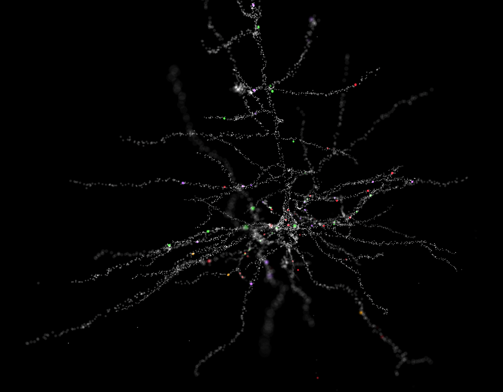
Authentic morphology can be compared cautiously in the final extension.

Another authentic neuron image for morphology comparison.
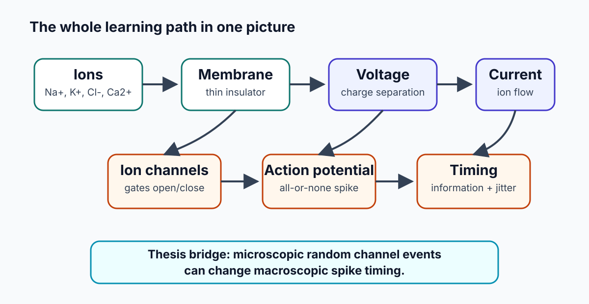
This map shows how the chapter ideas connect.
Quick Check: Visual opener
Question: Why is the workflow figure not the result?
Answer: It is the path for producing evidence, not the evidence itself.
Core Concept Lesson
The recommended project asks how increasing noise strength affects spike-time variability in a simple threshold neuron model. The independent variable is noise strength. The dependent variable is ISI CV or ISI standard deviation. The project is not a full molecular channel-noise model. It is a beginner model for learning threshold, reset, spikes, ISIs, CV, evidence, and limitations.
Quick Check: Core concept
Question: What is the recommended independent variable?
Answer: Noise strength.
Graph/Diagram-Reading Block
Read the project dashboard as an argument. The voltage traces show what the model produced. The spike times or ISIs show where timing came from. The CV bar graph summarizes variability. The claim should point to the summary graph, but the explanation should also mention the raw traces so the audience sees that the statistic came from spike timing, not from nowhere.
Quick Check: Graph/diagram reading
Question: Why should a claim mention both raw traces and a summary graph?
Answer: The summary statistic comes from spike timing visible in the raw/model output.
Worked Example Box A
Study move: Cover the solution first, try the problem, then compare your reasoning with the worked solution.
Problem: Turn this idea into a hypothesis: more random voltage wobble should make spike timing less regular.
Solution: If noise strength increases, then ISI variability will increase because random voltage fluctuations make threshold crossings happen earlier or later.
Quick Check A With Answer
Question: What is the independent variable in the recommended project?
Answer: Noise strength.
Basic Calculation
Task: Low-noise CV = 0.10 and high-noise CV = 0.35. How much larger is the high-noise CV, and what does that mean?
Answer: 0.35 - 0.10 = 0.25 larger. The high-noise condition has more irregular spike timing relative to its average interval.
Worked Example Box B
Study move: Cover the solution first, try the problem, then compare your reasoning with the worked solution.
Problem: Low noise CV = 0.08. High noise CV = 0.31. Write a result sentence.
Solution: The high-noise condition had a larger ISI CV than the low-noise condition, supporting the idea that noise can make spike timing less regular.
Quick Check B With Answer
Question: Why must the final project include a limitation?
Answer: Because a simplified model teaches one mechanism but does not prove all details of real neurons.
Mini-Lab or Code
Run notebooks/chapter08_capstone_project.ipynb from top to bottom without editing it. Save or redraw one figure that compares low, medium, and high noise. Then change only one parameter: noise strength. Record the resulting spike count, firing rate, and CV in a small table. The final slide should show one graph and one sentence of interpretation.
Quick Check: Mini-lab
Question: Why change only one parameter first?
Answer: It makes the cause of any result easier to interpret.
Interactive Exercise
Use the capstone notebook as a controlled experiment. The independent variable is noise strength; the dependent variable is CV or ISI spread. Do not change baseline, threshold, total time, or input drive during the first experiment.
Quick Check: Interactive exercise
Question: What variables should stay controlled in the first capstone run?
Answer: Baseline voltage, threshold, time step, total time, reset rule, and input drive.
Retrieval Quiz and Reflection
- What are the independent and dependent variables in the recommended project?
- What control variables should stay the same?
- Write one claim sentence using the word "evidence."
- Write one limitation sentence.
Answers: Independent variable: noise strength. Dependent variable: ISI CV or another spike-timing variability measure. Controls include baseline voltage, threshold, time step, total simulated time, reset rule, and input drive. A good claim sentence links higher noise to higher CV using the graph as evidence. A good limitation says the threshold model is simplified and does not represent every real channel state.
Assessment checkpoint: The student is ready to present when she can explain what changed, what was measured, what graph supports the claim, and what the model cannot prove.
Chapter Summary
Chapter 8 answers the opening question by connecting the visual story to a mechanism the student can explain without calculus. The key move is: The recommended project asks how increasing noise strength affects spike-time variability in a simple threshold neuron model.
Homework
Questions
- Draft a five-sentence abstract: background, question, method, result, limitation.
- Make a six-slide outline for the final talk.
- Graph-reading: identify the raw trace panel and the summary metric panel in the project dashboard.
- Quantitative: low-noise CV = 0.12 and high-noise CV = 0.36. What is the difference?
- Misconception check: explain why the project should change one main variable at a time.
- Extension: write one limitation sentence for a threshold-noise model.
Answer Key
- Answer should mention ions/channels/spikes, the noise question, simple threshold model or spreadsheet method, CV result, and model limitation.
- Slides: question, neuron map, ions make voltage, channels make spikes, model/data, claim/limitation.
- Raw traces show voltage over time; summary panels show rates, ISIs, CV, or condition comparisons.
- 0.36 - 0.12 = 0.24 higher in the high-noise condition.
- One main variable makes the evidence easier to interpret; changing many things at once hides the cause.
- Example: The model adds voltage noise directly and does not simulate every molecular channel state.
Stretch Box
Add one authentic-data comparison from Allen Cell Types: compare two real neurons by morphology and firing trace, then state what the comparison cannot prove.
Mentor Note
Grade the argument, not just the polish. The student should be able to say what changed, what was measured, what was concluded, and what remains unknown.
Glossary Additions
- Research question
- Hypothesis
- Independent variable
- Dependent variable
- Control
- Limitation
Source Notes
| Figure | Asset | Caption | Alt text | Source notes |
|---|---|---|---|---|
| 8.1 | project_workflow.svg |
Capstone workflow from question to conclusion. | Flowchart of question, model, data, graph, claim, limitation. | Original generated course figure. |
| 8.2 | project_dashboard.svg |
Example project dashboard with traces and summary graph. | Dashboard with low/medium/high noise traces and CV bar graph. | Original generated course plot. |
| 8.3 | layer_v_pyramidal.png |
Authentic morphology can be compared cautiously in the final extension. | Layer V pyramidal cell image. | Wikimedia Commons, CC BY-SA 4.0. |
| 8.4 | ca1_pyramidal.png |
Another authentic neuron image for morphology comparison. | CA1 pyramidal cells with synapses. | Wikimedia Commons, CC BY-SA 4.0. |
| 8.5 | concept_map.svg |
This map shows how the chapter ideas connect. | Concept map linking ions, membrane voltage, synapses, action potentials, spike trains, models, noise, and capstone claims. | Generated locally as a Mermaid-style concept map for the end-of-course review. |
Notation and Units
| Symbol or unit | Meaning |
|---|---|
| V_m | membrane voltage or membrane potential |
| mV | millivolt, one thousandth of a volt |
| ms | millisecond, one thousandth of a second |
| Hz | events per second |
| mM | millimolar concentration |
| E_ion | reversal potential for one ion |
| E_Na | sodium reversal potential |
| E_K | potassium reversal potential |
| g_Na | sodium conductance |
| g_K | potassium conductance |
| C | capacitance |
| I | current |
| I_app | applied current |
| ISI | interspike interval |
| CV | standard deviation divided by mean |
| m | HH sodium activation variable |
| h | HH sodium inactivation variable |
| n | HH potassium activation variable |
Sign Convention
Membrane potential usually means inside relative to outside. If V_m = -70 mV, the inside is 70 mV lower than the outside reference.
Common Conversions
-0.070 V = -70 mV
120 ms = 0.120 s
10 spikes / 2 s = 5 Hz
Tiny Code Snippets
These snippets are short enough to read aloud. They are not meant to replace the notebooks; they show the smallest useful calculation behind the book.
mV Change
start_mV = -70
end_mV = -55
change_mV = end_mV - start_mV
print(change_mV, "mV")
print("depolarized" if change_mV > 0 else "hyperpolarized")
Interpretation: -55 mV is less negative than -70 mV, so the change is +15 mV and the membrane depolarized.
Threshold Detection
V_m = [-70, -66, -61, -56, -54, -20, 25]
threshold = -55
for i, v in enumerate(V_m):
if v >= threshold:
print("threshold crossed at index", i, "with V_m =", v, "mV")
break
Interpretation: The first crossing matters because it marks when spike feedback begins in the simplified story.
Interspike Intervals
spike_times_ms = [10, 24, 38, 53, 67]
isi_ms = []
for a, b in zip(spike_times_ms[:-1], spike_times_ms[1:]):
isi_ms.append(b - a)
print(isi_ms)
print("mean ISI =", sum(isi_ms) / len(isi_ms), "ms")
Interpretation: ISIs turn spike timing into numbers that can be compared across trials.
One LIF Update Step
V_m = -70.0
rest = -70.0
tau_ms = 20.0
input_drive = 18.0
dt_ms = 0.1
leak = (rest - V_m) / tau_ms
dV = (leak + input_drive / tau_ms) * dt_ms
V_m = V_m + dV
print(round(V_m, 3), "mV")
Interpretation: This tiny update says voltage changes a little each time step because leak and input do not perfectly balance.
Curated Data Assets
The course uses curated data so the student can practice real scientific habits without getting lost in a large archive.
| Asset | Path | Student use | Mentor note |
|---|---|---|---|
| Synthetic spike times | neuro_book/datasets/synthetic_spike_times.csv |
Make a raster, compute ISIs, and compare CV across noise conditions. | This is synthetic teaching data, not a real recording. |
| Toy morphology SWC | neuro_book/datasets/toy_pyramidal_morphology.swc |
See how a neuron shape can be represented as connected points. | This is a toy morphology, not an Allen reconstruction. |
| Allen example route | neuro_book/datasets/allen_cell_types_example.md |
Mentor-guided comparison of morphology and electrophysiology. | Use one example cell, not open-ended browsing. |
| Action-potential storyboard | neuro_book/figures/generated/anim_01_action_potential_storyboard.md |
Rehearse an animation with channel states and trace phases. | Useful for final presentation practice. |
Dataset Safety Rule
The student should never begin with a large open archive. She should begin with one small question, one figure, and one measurable quantity.
Resource Catalog
This catalog prioritizes resources that are official, widely used, or both. When reuse terms are resource-specific or not obvious from a stable landing page, the catalog says so instead of guessing. For this minibook, the safest default is to link to external resources, use locally generated teaching figures, and avoid redistributing third-party assets unless the license is clear.
| Resource | URL | Purpose in the minibook | License or access terms | HS suitability | Evidence |
|---|---|---|---|---|---|
| OpenStax Anatomy and Physiology 2e | https://openstax.org/details/books/anatomy-and-physiology-2e | Core textbook source for membrane potential, action potentials, graded potentials, and synapses. | OpenStax A&P 2e preface states CC BY-NC-SA 4.0 for the textbook pages. Use attribution and noncommercial/share-alike care for adapted material. | Excellent for core reading and adapted concept figures. | Official OpenStax preface/license page and action-potential chapter. |
| OpenStax Biology 2e, Section 35.2 | https://openstax.org/books/biology-2e/pages/35-2-how-neurons-communicate | Core conceptual support for neuron communication, synapses, EPSPs/IPSPs, and action potentials. | OpenStax open textbook; check the specific book page/license before adapting figures. | Excellent for core reading. | Official OpenStax Biology 2e section. |
| Neuroscience Online | https://nba.uth.tmc.edu/neuroscience/ | Open-access background textbook for mentor curation and occasional student reading. | Open-access electronic resource; the landing page does not clearly state a Creative Commons license, so link rather than redistribute. | Good as mentor reference; selected excerpts only for student reading. | UTHealth/McGovern Medical School resource page. |
| HHMI BioInteractive | https://www.biointeractive.org/ | Videos, animations, interactives, activities, and assessments for biology teaching. | HHMI resources are free for educational use, but redistribution/adaptation depends on the specific resource terms. Link to resources and check each page before embedding or modifying. | Strong for visuals and enrichment. | HHMI terms of use and BioInteractive educator guidance. |
| PhET Membrane Channels | https://phet.colorado.edu/en/simulations/membrane-channels | Interactive for diffusion, membrane transport, and channel intuition. | PhET licensing page says regular HTML simulation files are CC BY-NC 4.0; check the current simulation/license page before redistributing files or screenshots. | Very good for intuition-first lesson blocks. | Official PhET licensing page. |
| Allen Cell Types Database | https://celltypes.brain-map.org/ | Real morphology, electrophysiology, downloadable models, and API access. | Allen terms emphasize noncommercial use of content unless otherwise stated or agreed in writing. Use links and small mentor-guided examples; check current terms before redistribution. | Excellent for "real neuron" and "real data" chapters. | Allen Cell Types overview, AllenSDK page, and Allen Institute terms. |
| NEURON Simulator | https://www.neuronsimulator.org/ | Authoritative simulator for single neurons and networks; supports Python and GUI workflows. | Open-source project; official GitHub organization identifies NEURON-related repositories, with license details in repository/license files. | Best for mentor and advanced student; use lightly in the high-school core. | Official NEURON site/GitHub repository and documentation route. |
| NetPyNE | https://www.netpyne.org/ | Higher-level Python framework on top of NEURON; useful for structured multiscale examples. | Official site describes NetPyNE as open source and links to GitHub. Check the repository license before redistributing code. | Better for mentor-facing authored examples than for first-time student use. | Official NetPyNE about and documentation pages. |
| ModelDB | https://modeldb.science/ | Repository of neuroscience models by simulator, topic, cell type, current, and paper. | Site has terms of use; individual models may vary by source. Link to models and check terms before reuse. | Excellent mentor resource for vetted examples and authentic links. | ModelDB help and terms guidance. |
| Hodgkin and Huxley 1952 conductance model paper | https://doi.org/10.1113/jphysiol.1952.sp004764 | Mentor background for conductance, reversal potentials, voltage clamp, and why the HH circuit in Chapter 6 matters. | Classic journal article; link to the DOI or journal page rather than redistributing a scanned PDF. | Mentor only. Too mathematical for the required high-school path. | DOI and Journal of Physiology record; also represented in ModelDB's HH squid axon example. |
| Hamill et al. 1981 patch-clamp paper | https://doi.org/10.1007/BF00656997 | Mentor background for why single-channel recordings changed neuroscience and how patch clamp made random channel openings visible. | Springer journal article; use citation and link rather than redistributing the article. | Mentor only. Use its historical idea, not the full methods paper, with the student. | Springer record for the patch-clamp methods article. |
| Allen GLIF model documentation | https://alleninstitute.github.io/AllenSDK/glif_models.html | Mentor background for simplified point-neuron models that can reproduce spike timing from measured cells. | Official AllenSDK documentation; check repository license before reusing code. | Mentor and advanced extension only. | AllenSDK GLIF documentation and Allen GLIF model page. |
| Allen biophysical model documentation | https://alleninstitute.github.io/AllenSDK/biophysical_models.html | Mentor background for morphology-linked conductance models run in NEURON. | Official AllenSDK documentation; downloaded models and scripts should follow Allen terms and repository licenses. | Mentor only, unless reduced to one screenshot or story. | AllenSDK biophysical model documentation and Allen Cell Types overview. |
| ModelDB HH squid axon example | https://modeldb.science/84649 | Mentor example connecting the classic HH paper to runnable model code. | ModelDB terms apply; model-specific code and linked repositories may have their own terms. | Mentor only; use the idea to improve Chapter 6 explanations. | ModelDB model page for Squid axon (Hodgkin, Huxley 1952). |
| ModelDB channel-noise example | https://modeldb.science/127992 | Mentor example connecting stochastic channel noise to conductance-based neuron models. | ModelDB terms apply; model-specific code and linked repositories may have their own terms. | Mentor only; use to inform Chapter 7 and the capstone, not as required reading. | ModelDB model page for Linaro et al. channel-noise simulation. |
| DANDI Archive | https://dandiarchive.org/ | Open neurophysiology datasets for optional advanced capstone paths. | Public BRAIN Initiative-supported archive; datasets may include their own metadata and terms. Link rather than bundling large datasets. | Too advanced for core high-school path; excellent for extensions. | DANDI and NWB archive descriptions. |
| Neurodata Without Borders | https://nwb.org/ | Standard for neurophysiology and behavioral data; useful for an advanced appendix. | Open standard and software ecosystem for neurophysiology data. | Advanced extension only. | Official NWB overview and archive pages. |
| NeuroMorpho | https://neuromorpho.org/ | Downloadable neuron reconstructions in SWC format for morphology labs. | NeuroMorpho terms state CC BY 4.0 and require citation of original papers, NeuroMorpho.Org, and the current repository citation. Programmatic access must follow their API/direct-link rules. | Very good for morphology-focused enrichment. | Official NeuroMorpho terms of use. |
Reading Tiers For This Course
Student Core
The student should not be asked to chase every source. Required reading stays narrow:
- This minibook narrative, figures, worked examples, homework, and notebooks.
- OpenStax membrane, action-potential, graded-potential, and synapse sections.
- Selected Neuroscience Online pages only when the minibook calls for them: resting potential, ionic mechanisms, propagation, and synaptic transmission.
- Selected HHMI or PhET interactives for intuition before equations.
Mentor Background
Mentor background is different from student reading. These sources should shape the mentor's explanations, examples, and answers, but they should not be assigned in full:
| Source | Best mentor use | Do not assign in full because |
|---|---|---|
| Hodgkin and Huxley 1952 conductance model paper | Clarify why Chapter 6 uses conductance, reversal potential, and a membrane-circuit analogy. | It assumes advanced mathematics, experimental electrophysiology, and a long technical paper format. |
| Hamill et al. 1981 patch-clamp paper | Explain why patch clamp made single-channel all-or-none openings experimentally visible. | It is a methods paper, not a beginner teaching text. |
| Allen GLIF documentation and Teeter et al. 2018 | Connect simple threshold models to real electrophysiology data and spike-time prediction. | The model-fitting details exceed the no-calculus promise. |
| Allen biophysical model documentation | Show what a full morphology-linked conductance model looks like after the student understands the cartoon circuit. | It requires NEURON, model files, and advanced computational setup. |
| ModelDB examples | Choose one trusted runnable model when the mentor wants authenticity. | Open browsing can overwhelm the student and individual model quality/terms vary. |
| DANDI and NWB | Explain where modern neurophysiology datasets live and why data standards matter. | They are data infrastructure, not a beginner path through ions and spikes. |
The mentor's job is to translate these background sources into one clear figure, one causal sentence, or one small calculation at a time.
Practical Reuse Rule For This Book
- Link to external resources whenever possible.
- Use locally generated diagrams for the minibook's core explanations.
- Treat real datasets as mentor-guided examples, not open-ended student browsing.
- Before copying a third-party figure, video still, model file, or interactive into the book, check the exact page-level license and attribution requirements.
- Label every figure as real data, cartoon, simulation, storyboard, or conceptual diagram.
Glossary
Use this glossary cumulatively. A strong student definition has three parts: what the term means, what graph or figure shows it, and why it matters for the ions -> spikes -> noise story.
| Term | Pronunciation help | First use | Definition |
|---|---|---|---|
| Action potential | AK-shun puh-TEN-shul | Week D | Rapid all-or-none voltage event used by neurons to send long-distance signals. |
| After-hyperpolarization | AF-ter hy-per-POH-lar-ih-ZAY-shun | Week D | Brief dip below resting V_m after an action potential. |
| Anion | AN-eye-on | Week B | Negatively charged ion. |
| Axon | AK-son | Week A | Output process that carries action potentials away from the cell body. |
| Axon hillock | AK-son HIL-ock | Week A | Region near the soma where spike initiation is often discussed in beginner maps. |
| Capacitance | kuh-PAS-ih-tuns | Week F | Ability to store separated charge across a membrane. |
| Cation | KAT-eye-on | Week B | Positively charged ion. |
| Channel noise | CHAN-ul noyz | Week G | Random fluctuation from finite ion channel openings and closings. |
| Conductance | kun-DUK-tuns | Week F | How easily current can flow through a pathway. |
| Concentration gradient | KON-sen-TRAY-shun GRAY-dee-ent | Week B | Difference in concentration from one place to another. |
| CV | see-vee | Week E | Coefficient of variation: standard deviation divided by mean. |
| Dendrite | DEN-drite | Week A | Branched input structure that receives many signals. |
| Depolarization | dee-POH-lar-ih-ZAY-shun | Week A | V_m becomes less negative, such as -70 mV to -55 mV. |
| Diffusion | dih-FYOO-zhun | Week B | Movement from high concentration toward low concentration. |
| Driving force | DRY-ving force | Week B/F | How far membrane voltage is from an ion's reversal potential. |
| EPSP | ee-pee-es-pee | Week C | Excitatory postsynaptic potential, usually moving V_m toward threshold. |
| Equilibrium potential | ee-kwih-LIB-ree-um puh-TEN-shul | Week B | Voltage where one ion's chemical and electrical pushes balance. |
| Firing rate | FYR-ing rayt | Week E | Number of spikes per second, measured in Hz. |
| Graded potential | GRAY-ded puh-TEN-shul | Week C | Local voltage change that can vary in size and fade. |
| Hyperpolarization | hy-per-POH-lar-ih-ZAY-shun | Week A/D | V_m becomes more negative, such as -70 mV to -80 mV. |
| Interspike interval | IN-ter-spike IN-ter-vul | Week E | Time between consecutive spikes. |
| Ion | EYE-on | Week B | Charged atom or molecule. |
| Ion channel | EYE-on CHAN-ul | Week B | Membrane protein that lets certain ions cross when open. |
| IPSP | eye-pee-es-pee | Week C | Inhibitory postsynaptic potential, usually opposing firing or stabilizing V_m. |
| Membrane potential | MEM-brayn puh-TEN-shul | Week B | Voltage inside the cell compared with outside. |
| Myelin | MY-uh-lin | Week A/D | Insulating wrap around many axons. |
| Open fraction | OH-pen FRAK-shun | Week G | Open channels divided by total channels at a moment or over a recording period. |
| Raster plot | RAS-ter plot | Week E | Plot of spike times across trials, often one row per trial. |
| Refractory period | ree-FRAK-tor-ee PEER-ee-ud | Week D | Time after a spike when firing is impossible or harder. |
| Reversal potential | ree-VER-sul puh-TEN-shul | Week B/F | Voltage where one ion has no net current through its channel. |
| Selective permeability | seh-LEK-tiv per-mee-uh-BIL-ih-tee | Week B | Membrane property where some ions cross more easily than others. |
| Spike train | spike trayn | Week E | Sequence of action-potential times. |
| Stochastic | stoh-KAS-tik | Week G | Involving randomness. |
| Synapse | SIN-aps | Week C | Communication point between a neuron and another cell. |
| Threshold | THRESH-hold | Week C/D | Voltage level where spike feedback becomes self-amplifying. |
| Voltage clamp | VOHL-tij klamp | Week F | Technique that holds voltage fixed and measures current. |
Assessment Architecture
Use three layers of assessment. The first two are feedback tools, not grades. The final mini-project is summative, but it should still reward scientific explanation rather than coding sophistication.
Layer 1: Daily Formative Checks
Each study day should end with four short checks. Discuss them immediately. If the student misses one, she should revise the answer, redraw the figure, or redo the calculation before moving on.
| Daily item | What it tests | Example prompt shape | What good feedback sounds like |
|---|---|---|---|
| Prediction question | Causal reasoning before seeing the answer | "If this channel opens, what should happen to V_m?" | "Name the cause first, then the predicted voltage direction." |
| Graph-reading question | Axes, units, patterns, and evidence | "What does each axis show, and where is threshold?" | "Read the graph before naming the mechanism." |
| Plain-language explanation | Conceptual clarity and vocabulary | "Explain this idea to another high-school student in three sentences." | "Use the term, define it, then connect it to the figure." |
| Quantitative item | Sign, units, arithmetic, and biological meaning | "Compute the change from -70 mV to -55 mV and interpret it." | "The number is not finished until it has units and a meaning sentence." |
Daily Prompt Bank By Week
| Week | Prediction | Graph reading | Plain-language explanation | Quantitative item |
|---|---|---|---|---|
| A | Predict signal direction from dendrites to terminals. | Label soma, dendrites, axon, and terminals on a new neuron image. | Explain a neuron as input, decision, and output. | Compute a simple mV change such as -70 to -55 mV. |
| B | Predict whether K+ tends to diffuse inward or outward at rest. | Read the ion-gradient bars or Nernst sign plot. | Explain why K+ leak plus gradients can make inside negative. | Decide the sign of E_ion from outside/inside ratio. |
| C | Predict whether a short EPSP/IPSP sequence reaches threshold. | Read a summation trace against the threshold line. | Explain EPSP, IPSP, and graded potential. | Add simple voltage nudges and compare to -55 mV. |
| D | Predict what happens after threshold is crossed. | Annotate rest, threshold, peak, refractory period, and after-hyperpolarization. | Narrate the spike as Na+ and K+ channel timing. | Compute voltage change from rest to threshold or peak. |
| E | Predict which spike train has higher rate or more irregular timing. | Convert a raster into spike count, ISIs, and a rate sentence. | Explain why information is not mainly spike height. | Compute firing rate or ISIs from spike times. |
| F | Predict the direction of pull when V_m is far from E_Na or E_K. | Match HH-style panels to V_m, g_Na, and g_K. | Translate I = g(V_m - E) into words. | Compute V_m - E_ion with units. |
| G | Predict which channel population is less noisy. | Read a single-channel trace or open-fraction histogram. | Explain why random does not mean unmechanistic. | Compute open fraction or CV from a short list. |
| H | Predict which condition should have larger timing variability. | Read a project dashboard as evidence. | Explain claim, evidence, reasoning, and limitation. | Compare two CV values or one mean ISI. |
Layer 2: Weekly Chapter Checks
At the end of each chapter, give a five- to eight-item check plus one short oral explanation. Use the chapter's retrieval quiz, quick checks, and homework to choose items. Keep the check short enough that it can be discussed immediately.
| Required weekly item type | Count | Purpose |
|---|---|---|
| Concept and vocabulary | 1-2 | Can the student use the terms correctly? |
| Prediction or causal chain | 1 | Can the student connect cause to effect? |
| Graph or figure interpretation | 1-2 | Can the student use a visual as evidence? |
| Quantitative item | 1-2 | Can the student compute with correct sign, units, and interpretation? |
| Misconception repair | 1 | Can the student replace a common misconception with a better explanation? |
| Oral explanation | 1 | Can the student explain the week's core idea aloud in two to three minutes? |
Weekly Readiness Rule
The student is ready to move on when she gets about 80% of core items correct and can give a coherent oral explanation. Do not require perfection. If she misses the same type of item twice, give a targeted repair task:
| Repeated issue | Repair task |
|---|---|
| Vocabulary without meaning | Write the term, define it, and use it in one causal sentence. |
| Graph-reading errors | Read axes, units, and pattern before explaining mechanism. |
| Sign or unit errors | Redo one worked example and add a biological meaning sentence. |
| Weak causal explanation | Use a chain with arrows, such as gradient -> permeability -> voltage. |
| Overclaiming from models | Add "what this figure is / is not" to the explanation. |
Layer 3: Summative Mini-Project
The final mini-project asks the student to make one evidence-based claim about how noise changes spike timing or variability in a simple model. The project should not assess coding sophistication. It should assess scientific explanation.
Required Project Artifacts
- One research question and hypothesis.
- One figure with correctly labeled axes and units.
- One timing metric, such as firing rate, ISI, mean ISI, standard deviation, or CV.
- One claim-evidence-reasoning paragraph.
- One limitation sentence.
- One sentence distinguishing model output from biological evidence.
- A short oral presentation for other high-school students.
Final Project Rubric Summary
Use the detailed Final Project Rubric. The six required criteria are:
| Criterion | What to look for |
|---|---|
| Conceptual accuracy | The explanation correctly connects neurons, ions/channels, voltage, spikes, timing, and noise. |
| Correct graph labeling | Axes, units, conditions, and threshold or timing marks are clear. |
| Correct use of terms | Terms such as V_m, spike train, ISI, CV, model, and limitation are used accurately. |
| Timing metric calculation | At least one rate, ISI, mean ISI, SD, or CV calculation is correct and interpreted. |
| Limitation explanation | The student states what the model does not prove. |
| Model vs biological evidence | The student distinguishes simulation output from direct biological data. |
Checkpoint Plan
Use this plan to decide when the student is ready to move on and where she needs support.
| Metric | When to measure | Target |
|---|---|---|
| Entry diagnostic on graph reading, signs, units, and basic neuron parts | Before week one | Identify support needs, not a grade. |
| Daily formative checks | Each study day | One prediction, one graph-reading, one explanation, and one quantitative item are discussed immediately. |
| Weekly chapter check | Weekly | About 80% on core items plus a clear oral explanation before moving on. |
| Worked-example independence | Weekly | By mid-course, the student should solve the second example in each chapter with only light prompting. |
| Trace/raster interpretation | Weeks D through H | Student can explain what a graph shows before naming mechanisms. |
| Quantitative accuracy | Weeks B, E, F, and G | Correct units, correct sign, and a sentence of interpretation. |
| Notebook independence | Weeks F through H | Notebook runs top-to-bottom; student can explain each figure. |
| Final capstone | Week H | Student makes one evidence-based claim about how noise changes spike timing or variability. |
Weekly Mastery Rubric
Use this rubric for weekly mentor check-ins and for the final presentation rehearsal. It sits inside the larger Assessment Architecture: daily formative checks repair small problems quickly, weekly checks decide readiness for the next chapter, and the final mini-project assesses scientific explanation.
The target by the final presentation is mostly proficient, with at least one strong explanation that uses a graph or calculation as evidence.
| Dimension | Emerging | Developing | Proficient | Strong |
|---|---|---|---|---|
| Biological structure and vocabulary | Can label a few parts but confuses roles | Labels most parts and basic functions | Explains how structure supports signaling | Uses structure to predict signaling differences |
| Causal reasoning | Recites facts separately | Links one cause to one effect | Explains multi-step chains such as gradient -> permeability -> voltage | Can compare alternative mechanisms and justify which dominates |
| Graph interpretation | Reads axes inconsistently | Reads axes correctly but misses meaning | Interprets traces and rasters correctly | Uses a graph as evidence in an explanation |
| Quantitative fluency | Sign, units, and arithmetic errors common | Can solve guided problems | Solves worked-example analogs independently | Explains what the calculation means biologically |
| Communication | Gives short or fragmented explanations | Explains with prompts | Gives coherent written and oral explanations | Explains clearly, concisely, and with evidence |
Weekly Check Format
Each weekly check should include five to eight items and one short oral explanation:
- One to two vocabulary/concept items.
- One prediction or causal-chain item.
- One to two graph or figure interpretation items.
- One to two quantitative items.
- One misconception-repair item.
- One two- to three-minute oral explanation of the week's core idea.
The weekly check is not meant to be a high-pressure test. It is a readiness conversation with evidence.
Final Project Rubric
Use this rubric for the Week H mini-project and final presentation. The project should assess scientific explanation, not coding sophistication. A student can earn a strong score with a hand-labeled graph or a notebook-generated figure if the explanation is clear and accurate.
Required Student Deliverables
- Research question and hypothesis.
- One figure with labeled axes, units, and conditions.
- At least one timing calculation: firing rate, ISI, mean ISI, standard deviation, or CV.
- Claim-evidence-reasoning paragraph.
- One limitation sentence.
- One sentence distinguishing model output from biological evidence.
- Two- to four-minute oral explanation for other high-school students.
Rubric
| Criterion | Points | Emerging | Developing | Proficient | Strong |
|---|---|---|---|---|---|
| Conceptual accuracy | 20 | Describes pieces separately or with major errors. | Gives a mostly correct story but misses one key link. | Correctly connects neuron shape, voltage, spikes, timing, and noise. | Explains the causal chain clearly and can answer a follow-up question. |
| Correct graph labeling and figure interpretation | 15 | Figure lacks key labels or the student cannot explain it. | Labels are partly correct but interpretation is incomplete. | Axes, units, conditions, and visual pattern are clear. | Uses the figure as evidence and notes what it does not show. |
| Correct use of terms | 15 | Terms are missing or used incorrectly. | Uses most terms correctly with prompting. | Uses core terms accurately: V_m, spike train, ISI, CV, model, limitation. | Defines terms in student-friendly language while using them precisely. |
| Timing metric calculation | 15 | Calculation is missing or has major sign/unit errors. | Calculation is mostly correct but interpretation is weak. | At least one timing metric is correct and interpreted. | Calculation is correct, labeled, and used as evidence in the claim. |
| Limitation explanation | 15 | No limitation or only says "it might be wrong." | Gives a vague limitation. | States a clear limitation of the simplified model. | Explains why the limitation matters and suggests a reasonable next step. |
| Model output vs biological evidence | 20 | Treats simulation output as direct proof about real neurons. | Partly distinguishes model and biology but overclaims. | Clearly says what is model output and what would count as biological evidence. | Compares model, cartoon, and real data carefully without overclaiming. |
Score Bands
| Score | Meaning |
|---|---|
| 90-100 | Strong: clear evidence-based explanation with careful limits. |
| 75-89 | Proficient: scientifically sound and presentation-ready after minor edits. |
| 60-74 | Developing: useful work, but needs revision in graph use, calculation, or limitation. |
| Below 60 | Emerging: return to the chapter checks before presenting. |
Mentor Reminder
Do not reward extra code complexity by itself. Reward a clear claim, correct graph reading, correct calculation, accurate vocabulary, and honest limits.
Week A / Chapter 1: Neurons as Signaling Cells
Opening question: How does a neuron's shape help it receive, decide, and send information?
This notebook is a runnable companion. It uses simple Python plots and calculations to reinforce the chapter without calculus.
import matplotlib.pyplot as plt
parts = ["dendrites", "soma", "axon initial segment", "axon", "terminals"]
x = [0, 1.5, 3, 4.5, 6]
y = [0, 0, 0, 0, 0]
plt.figure(figsize=(8, 2))
plt.plot(x, y, marker="o", linewidth=3)
for xi, label in zip(x, parts):
plt.text(xi, 0.08, label, ha="center", fontsize=9)
plt.yticks([])
plt.xlabel("usual information flow")
plt.title("Neuron shape as a signaling path")
plt.show()Student reflection
In 3-5 sentences, explain what the figure or calculation shows and how it connects to the chapter opening question.
Teacher check
The notebook runs top-to-bottom, the figure has labeled axes when axes are used, and the student can explain the result without reading code aloud.
Week B / Chapter 2: Ions, Gradients, and Why Rest Is Negative
Opening question: How can salty water and a thin membrane make a measurable voltage?
This notebook is a runnable companion. It uses simple Python plots and calculations to reinforce the chapter without calculus.
import numpy as np
import matplotlib.pyplot as plt
ions = ["Na+", "K+", "Cl-", "Ca2+"]
inside = np.array([12, 140, 10, 0.0001])
outside = np.array([145, 5, 110, 2])
x = np.arange(len(ions))
plt.figure(figsize=(7, 4))
plt.bar(x - 0.18, inside, width=0.36, label="inside")
plt.bar(x + 0.18, outside, width=0.36, label="outside")
plt.yscale("log")
plt.xticks(x, ions)
plt.ylabel("concentration (mM, log scale)")
plt.title("Ion gradients make membrane voltage possible")
plt.legend()
plt.tight_layout()
plt.show()
def nernst_mV(outside, inside, z=1, factor=61.0):
"""Approximate Nernst potential at body temperature in mV."""
if outside <= 0 or inside <= 0 or z == 0:
raise ValueError("outside and inside must be > 0 and z must be nonzero")
return (factor / z) * np.log10(outside / inside)
ratios = np.logspace(-2, 2, 400)
E = 61 * np.log10(ratios)
plt.figure(figsize=(6, 4))
plt.semilogx(ratios, E)
plt.axhline(0)
plt.axvline(1, linestyle="--")
plt.xlabel("[outside] / [inside]")
plt.ylabel("Equilibrium potential (mV)")
plt.title("How concentration ratio sets the sign of equilibrium potential")
plt.tight_layout()
plt.show()
print("Illustrative E_K =", round(nernst_mV(5, 140, z=1), 1), "mV")
print("Illustrative E_Na =", round(nernst_mV(145, 12, z=1), 1), "mV")Student reflection
In 3-5 sentences, explain what the figure or calculation shows and how it connects to the chapter opening question.
Teacher check
The notebook runs top-to-bottom, the figure has labeled axes when axes are used, and the student can explain the result without reading code aloud.
Week C / Chapter 3: Graded Signals and Threshold
Opening question: How do many small synaptic inputs combine before a neuron fires?
This notebook is a runnable companion. It uses simple Python plots and calculations to reinforce the chapter without calculus.
import matplotlib.pyplot as plt
inputs = [4, 5, 6, -3]
V_m = [-70]
for change in inputs:
V_m.append(V_m[-1] + change)
plt.figure(figsize=(7, 4))
plt.step(range(len(V_m)), V_m, where="post", marker="o")
plt.axhline(-55, color="red", linestyle="--", label="threshold")
plt.ylabel("V_m (mV)")
plt.xlabel("input number")
plt.title("Graded synaptic inputs can add")
plt.legend()
plt.show()
print("Final V_m:", V_m[-1], "mV")Student reflection
In 3-5 sentences, explain what the figure or calculation shows and how it connects to the chapter opening question.
Teacher check
The notebook runs top-to-bottom, the figure has labeled axes when axes are used, and the student can explain the result without reading code aloud.
Week D / Chapter 4: How Spikes Begin and Travel
Opening question: How does a local voltage change become a traveling all-or-none signal?
This notebook is a runnable companion. It uses simple Python plots and calculations to reinforce the chapter without calculus.
import numpy as np
import matplotlib.pyplot as plt
t = np.linspace(0, 8, 400)
V_m = -70 + 105*np.exp(-((t-2.5)/0.45)**2) - 12*np.exp(-((t-4.2)/0.8)**2)
plt.figure(figsize=(7, 4))
plt.plot(t, V_m)
plt.axhline(-55, color="red", linestyle="--", label="threshold")
plt.xlabel("time (ms)")
plt.ylabel("V_m (mV)")
plt.title("Action potential phases")
plt.legend()
plt.show()Student reflection
In 3-5 sentences, explain what the figure or calculation shows and how it connects to the chapter opening question.
Teacher check
The notebook runs top-to-bottom, the figure has labeled axes when axes are used, and the student can explain the result without reading code aloud.
Week E / Chapter 5: Spike Trains and Neural Information
Opening question: How can spike timing carry information if individual spikes are mostly all-or-none?
This notebook is a runnable companion. It uses simple Python plots and calculations to reinforce the chapter without calculus.
import numpy as np
import matplotlib.pyplot as plt
spike_times = np.array([10, 24, 38, 53, 67])
isi = np.diff(spike_times)
print("ISI values (ms):", isi)
print("Mean ISI:", isi.mean(), "ms")
print("Approx rate:", round(1000/isi.mean(), 1), "Hz")
plt.figure(figsize=(7, 2))
plt.eventplot(spike_times, lineoffsets=1, linelengths=0.8)
plt.yticks([])
plt.xlabel("time (ms)")
plt.title("Spike train as timing data")
plt.show()Student reflection
In 3-5 sentences, explain what the figure or calculation shows and how it connects to the chapter opening question.
Teacher check
The notebook runs top-to-bottom, the figure has labeled axes when axes are used, and the student can explain the result without reading code aloud.
Week F / Chapter 6: Circuits and Hodgkin-Huxley Intuition
Opening question: How did Hodgkin and Huxley turn the spike story into a measurable model?
This notebook is a runnable companion. It uses simple Python plots and calculations to reinforce the chapter without calculus.
import numpy as np
import matplotlib.pyplot as plt
t = np.linspace(0, 20, 500)
g_Na = np.exp(-((t-5)/1.2)**2)
g_K = 0.75*np.exp(-((t-8)/2.4)**2)
plt.figure(figsize=(7, 4))
plt.plot(t, g_Na, label="g_Na")
plt.plot(t, g_K, label="g_K")
plt.xlabel("time (ms)")
plt.ylabel("relative conductance")
plt.title("HH intuition: sodium fast, potassium slower")
plt.legend()
plt.show()
C = 1
V = 0.070
Q = C * V
print("Q =", Q, "microcoulomb when C is in microfarads")Student reflection
In 3-5 sentences, explain what the figure or calculation shows and how it connects to the chapter opening question.
Teacher check
The notebook runs top-to-bottom, the figure has labeled axes when axes are used, and the student can explain the result without reading code aloud.
Week G / Chapter 7: From Single Channels to Timing Variability
Opening question: Why are spike times not perfectly identical even when the input looks similar?
This notebook is a runnable companion. It uses simple Python plots and calculations to reinforce the chapter without calculus.
import numpy as np
import matplotlib.pyplot as plt
rng = np.random.default_rng(7)
dt = 0.1 # ms
T = 1000 # ms
t = np.arange(0, T, dt)
baseline = -70.0 # mV
threshold = -55.0 # mV
tau = 20.0 # ms
drive = 18.0 # arbitrary constant input
def run_noisy_neuron(noise_sd=1.2):
v = np.full_like(t, baseline, dtype=float)
spikes = []
for i in range(1, len(t)):
leak_term = (baseline - v[i-1]) / tau
noise_term = rng.normal(0, noise_sd) * np.sqrt(dt)
dv = (leak_term + drive / tau) * dt + noise_term
v[i] = v[i-1] + dv
if v[i] >= threshold:
spikes.append(t[i])
v[i] = baseline # reset after spike
spikes = np.array(spikes)
isi = np.diff(spikes)
rate_hz = len(spikes) / (T / 1000.0)
cv = np.std(isi) / np.mean(isi) if len(isi) > 1 else np.nan
return v, spikes, isi, rate_hz, cv
noise_levels = [0.6, 1.2, 2.0]
results = {}
for noise_sd in noise_levels:
v, spikes, isi, rate_hz, cv = run_noisy_neuron(noise_sd=noise_sd)
results[noise_sd] = {
"v": v,
"spikes": spikes,
"isi": isi,
"rate_hz": rate_hz,
"cv": cv,
}
print(f"noise={noise_sd:.1f} spikes={len(spikes):3d} rate={rate_hz:6.2f} Hz CV={cv:5.2f}")
fig, axes = plt.subplots(len(noise_levels), 1, figsize=(8, 6), sharex=True)
for ax, noise_sd in zip(axes, noise_levels):
v = results[noise_sd]["v"]
spikes = results[noise_sd]["spikes"]
ax.plot(t, v, linewidth=0.8)
ax.scatter(spikes, np.full_like(spikes, threshold), s=8)
ax.axhline(threshold, linestyle="--", linewidth=1)
ax.set_ylabel(f"noise {noise_sd}\nV_m (mV)")
axes[-1].set_xlabel("time (ms)")
fig.suptitle("Noisy threshold neuron: voltage traces and spike times")
fig.tight_layout()
plt.show()
plt.figure(figsize=(6, 4))
plt.bar([str(noise_sd) for noise_sd in noise_levels], [results[n]["cv"] for n in noise_levels])
plt.xlabel("noise standard deviation")
plt.ylabel("ISI CV")
plt.title("Noise changes spike-time regularity")
plt.tight_layout()
plt.show()Student reflection
In 3-5 sentences, explain what the figure or calculation shows and how it connects to the chapter opening question.
Teacher check
The notebook runs top-to-bottom, the figure has labeled axes when axes are used, and the student can explain the result without reading code aloud.
Week H / Chapter 8: Evidence, Explanation, and Communication
Opening question: Can the student make one evidence-based claim about noise and spike timing?
This notebook is a runnable companion. It uses simple Python plots and calculations to reinforce the chapter without calculus.
import numpy as np
import matplotlib.pyplot as plt
rng = np.random.default_rng(7)
dt = 0.1 # ms
T = 1000 # ms
t = np.arange(0, T, dt)
baseline = -70.0 # mV
threshold = -55.0 # mV
tau = 20.0 # ms
drive = 18.0 # arbitrary constant input
def run_noisy_neuron(noise_sd=1.2):
v = np.full_like(t, baseline, dtype=float)
spikes = []
for i in range(1, len(t)):
leak_term = (baseline - v[i-1]) / tau
noise_term = rng.normal(0, noise_sd) * np.sqrt(dt)
dv = (leak_term + drive / tau) * dt + noise_term
v[i] = v[i-1] + dv
if v[i] >= threshold:
spikes.append(t[i])
v[i] = baseline # reset after spike
spikes = np.array(spikes)
isi = np.diff(spikes)
rate_hz = len(spikes) / (T / 1000.0)
cv = np.std(isi) / np.mean(isi) if len(isi) > 1 else np.nan
return v, spikes, isi, rate_hz, cv
noise_levels = [0.6, 1.2, 2.0]
results = {}
for noise_sd in noise_levels:
v, spikes, isi, rate_hz, cv = run_noisy_neuron(noise_sd=noise_sd)
results[noise_sd] = {
"v": v,
"spikes": spikes,
"isi": isi,
"rate_hz": rate_hz,
"cv": cv,
}
print(f"noise={noise_sd:.1f} spikes={len(spikes):3d} rate={rate_hz:6.2f} Hz CV={cv:5.2f}")
fig, axes = plt.subplots(len(noise_levels), 1, figsize=(8, 6), sharex=True)
for ax, noise_sd in zip(axes, noise_levels):
v = results[noise_sd]["v"]
spikes = results[noise_sd]["spikes"]
ax.plot(t, v, linewidth=0.8)
ax.scatter(spikes, np.full_like(spikes, threshold), s=8)
ax.axhline(threshold, linestyle="--", linewidth=1)
ax.set_ylabel(f"noise {noise_sd}\nV_m (mV)")
axes[-1].set_xlabel("time (ms)")
fig.suptitle("Noisy threshold neuron: voltage traces and spike times")
fig.tight_layout()
plt.show()
plt.figure(figsize=(6, 4))
plt.bar([str(noise_sd) for noise_sd in noise_levels], [results[n]["cv"] for n in noise_levels])
plt.xlabel("noise standard deviation")
plt.ylabel("ISI CV")
plt.title("Noise changes spike-time regularity")
plt.tight_layout()
plt.show()
low_noise = results[0.6]["cv"]
high_noise = results[2.0]["cv"]
print("Capstone claim template:")
print(f"In this simple threshold model, high noise had CV={high_noise:.2f}, compared with CV={low_noise:.2f} for low noise.")
print("Limitation: this model creates random voltage wobble directly; it does not represent molecular channel states.")Student reflection
In 3-5 sentences, explain what the figure or calculation shows and how it connects to the chapter opening question.
Teacher check
The notebook runs top-to-bottom, the figure has labeled axes when axes are used, and the student can explain the result without reading code aloud.